Chapter 12 Invariance Testing
The focus of this lecture is invariance testing – that is, evaluating if a scale operates equivalently across two samples.
12.2 Invariance Testing (aka Multiple-Samples SEM or Multiple-Group CFA [MG-CFA])
12.2.1 Introducing the Topic and the Terminology
As we enter this topic of invariance it will be useful to take a few moments to look at the definitions. It is common for the use of the terms “invariance” and “noninvariance” to be confusing. As we look at each of these definitions I have often wondered why we don’t start with “variant” or “variation.”
Variance: is not a term we are using today. However, recalling the notions of variable (which contrasts with constant), variation, variability may help you with invariance (which means, it doesn’t vary).
Invariance is synonymous with equivalence. That is, there are not statistically significant differences between the two versions/models being compared.
Noninvariance is synonymous with nonequivalence. That is, there are statistically significant differences between the two versions/models being compared
Equality constraints are imposed by the researcher when we specify (require) two or more parameters to be equal. The particular constraints could be placed on between factor loadings, covariances between factors, intercepts, error variances, error covariances, and so forth. Such constraints simplify the analysis because only one coefficient is needed rather than two. In a multiple-samples/groups, like invariance testing, a cross-group equality constraint forces the computer to derive equal estimates of the same parameter across all groups. This specification corresponds to the null hypothesis that the parameter is equal in all populations from which the samples are drawn. We then conduct formal difference tests to see if, in fact, the model fit is worse when the two groups are constrained to be equal on that parameter (or more likely, set of parameters).
Measurement invariance is a property when a set of indicators measures the same constructs with equal precision over different samples.
A scale is said to have measurement invariance (or, measurement equivalence) across groups if respondents with identical levels of the latent construct have the same expected raw scores on the measure (Hirschfeld & von Brachel, Ruth, 2014).
We can think of this in several ways:
whether values of model parameters of substantive interest vary in meaningful ways across different samples,
as an interaction – whether sample membership moderates the relations specified in a model; if there is evidence for a group x model interaction, then the program must be allowed to derive separate estimates of some parameters in each sample in order for the model to have acceptable fit over all samples involved,
whether scores from the operationalization of a construct have the same meaning under differing conditions
- these conditions could involve time of measurement, test administration methods, or populations (national samples, clinical/community samples, children/adults, and so forth)
- absence of invariance says that findings of differences between persons cannot be unambiguously isolated from differences owing to time, methods, group membership (thus, there would be no clear basis for drawing inferences from the scores)
Longitudinal measurement invariance evaluates the stability in measurement parameters over time for the same population.
Method invariance is concerned with whether different methods of administration (online survey versus paper/pencil) are invariant.
My experience with invariance testing is the multiple language/cross-cultural/international context. Here we often ask, “What makes a test culturally transferable?” Byrne’s (2016c) article provides a current, excellent, thorough review. Highlights include:
- In the past we could claim that a test was culturally adaptive if it involved
- Translation/backtranslation
- Replication of factor structure within the culture
- Replication of validity and reliability estimates
- Today, there is a movement toward testing adaptation
- Including all the past steps, PLUS
- Invariance testing to explore the factor structure across cultures
- Investigation of item bias and construct relations
In this lesson we will focus rather narrowly on Byrne’s (2016c) strategy for the statistical/psychometric evaluation of invariance. You might also be interested in Gerstein’s, Systematic Test of Equivalence Procedure (STEP; (2021)), which walks the researcher, item-by-item, through six step analysis of the cultural appropriateness of each item. The researcher is prompted to consider why items are and are not appropriate/relevant and how they might be modified.
12.2.2 Evaluation Strategies
There are two primary options for establishing multigroup invariance.
12.2.2.1 Free baseline approach
In the free baseline approach, testing for measurement invariance is a hierarchical, model trimming, strategy. Specifically, the configural model (the initial, unconstrained model) is gradually restricted by adding cross-group equality constraints in a sequence that corresponds to weak, strong, and strict invariance. At the point that the invariance hypothesis cannot be retained, testing stops (i.e., more restricted models are not considered).
In the free baseline approach:
- Respecification moves from nesting to nested models.
- Fit generally worsens in each subsequent model.
- The goal is non-significant differences in fit with each additional set of cross-group equality constraints.
12.2.2.2 Constrained baseline approach
In the constrained baseline approach, testing for measurement invariance is a model building approach where the most restricted model (strict; with equal pattern coefficients, intercepts, and residuals) is the baseline. If necessary, these are sequentially released and compared backwards through the hierarchy (strong, weak, configural) but some researchers will switch around the order in which constraints are released.
In the constrained baseline approach:
- Respecification moves from nested to nesting models.
- Fit generally improves in each subsequent model
- The goal is to have satisfactory fit in the most restricted model (but this often is not the case).
Ideally-and-theoretically, model trimming and building approaches will end up in the same place, but this is not guaranteed.
12.2.3 Invariance Testing Workflow
Today we will will use the free baseline approach in testing the measurement equivalence of a scale across two groups.
Multigroup invariance testing involves:
- Structuring up the item-level dataset (i.e., reverse-coding any variables)
- For the groups-of-interest, identifying a common baseline model that meets acceptable standards for model fit. These standards include:
- theoretical and statistical identification
- appropriate magnitude and direction of factor loadings.
- Specifying and comparing a series of increasingly restrictive models. These models include:
- Configural invariance (the same CFA structure)
- Weak invariance (configural + pattern/factor loadings)
- Strong invariance (weak + item intercepts)
- Strict (strong + error variances and covariances)
- At the point (i.e., the model) that fit is unacceptable, consider investigating and reporting the source of partial measurement invariance.
12.2.4 Successive Gradations of Measurement Invariance
There are four levels of invariance. Invariance testing is a sequential and incremental process. Thus, each successive level of variance is prerequisite on meeting the criteria of the prior. Different authors use different names for these same notions.
12.2.4.1 Configural invariance
Configural invariance is the least restrictive level. It implies that the number of latent variables and the pattern of loadings on the latent variables on indicators are similar across the groups.
Configural invariance is tested by specifying the same CFA model in each group. Both the number of factors and the correspondence between factors and indicators are the same, but all parameters are freely estimated in each group.
If this model is not consistent with the data, then measurement invariance does not hold at any subsequent level.
If the model is retained, it says that the same factors are manifested (in potentially different ways) in each group. Differences could include:
- unequal pattern coefficients
- unequal intercepts
- unequal error variances
If there is only configural variance, a different weighting scheme would be needed for each group.
12.2.4.2 Weak invariance
Weak invariance is sometimes termed pattern invariance and metric invariance. Weak invariance requires configural variance plus equality of unstandardized pattern coefficients. That is, the magnitude of the loadings is similar across the groups.
The hypothesis of weak invariance is tested by:
- Imposing an equality constraint over groups on the unstandardized coefficient of each indicator. Then
- Comparing with the chi-square difference (\(\chi_{D}^{2}\)) test the configural invariance model and the weak invariance model
- In comparing models, if the fit of more restrictive invariance model tested is not appreciably worse than the immediately prior restrictive model, then the more restrictive weak invariance hypothesis is retained.
- Thus, the weak invariance model would be compared to the configural invariance model. IF we use the \(\chi_{D}^{2}\) > .05 (and we’ll learn later that there are better/more options), then we can claim weak invariance.
- Think back to what we learned about comparing nested/hierarchical models. As we continue through this invariance hierarchy (configural, weak, strong, strict), each of the more restrictive measures will have worse fit (the prior, lesser restrictive model will be the nesting model with “more sticks” and fewer degrees of freedom). Therefore, we would really like there to be NO DIFFERENCE in model fit when we add between-group equality constraints.
- If weak invariance is supported, then we can claim that constructs are manifested the same way in each group. This means that:
- slopes from regressing the indicators on their respective factors are equal across all groups, and
- factor scores can be calculated using the same weighting scheme in all groups tested
- If weak invariance is rejected, then…
- the factors (or at least a subset of items corresponding to those factors) have different meanings in different groups
- extreme response styles (ERS) may affect response variability, for example, low ERS is the tendency to avoid endorsing the most extreme options (e.g., never, always); high ERS is the tendency to endorse the most extreme options
- If we can support weak invariance, we are justified in formally comparing estimated factor variances or covariances across different groups, but because indicators are affected by both factors and sources of unique (residual) variation, we need MORE in order to statistically compare observed variances or covariances over groups. This comes from the next level.
12.2.4.3 Strong invariance**
Strong invariance is also termed scalar invariance; it is predicated on weak invariance. Strong invariance implies that the item loadings plus the item intercepts are similar across the groups. It also implies that there are no systematic response biases. It is required in order to meaningfully compare the means of latent variables across different groups.
- Item intercepts are considered to be the origin or starting value of the scale that your factor is based on. Thus, participants who have the same value on the latent construct should have equal values on the items on which the construct is based. These are related to the mean structure, hence you’ll see some refer to this as means.
- The intercept estimates the score on an indicator given a true score of zero on the corresponding factor
- Equality of intercepts says that different groups use the response scale of that indicator in the same way; that is, a person from one group and a person from a different group with the same level on the factor should obtain the same score on the indicator.
The hypothesis of strong invariance is tested by:
- Imposing equality constraints on unstandardized pattern coefficients and intercepts. Then,
- Comparing this model with the model of the equality-constrained pattern coefficients (i.e., the weak invariance model) with the \(\chi_{D}^{2}\)
- If the fit of the more restrictive invariance model tested is not appreciably worse than the immediately prior restrictive model, then the more restrictive weak invariance hypothesis is retained.
- Thus, the strong invariance model would be compared to the weak invariance model. If \(\chi_{D}^{2}\) > .05, then we can claim strong invariance.
- If the fit of the more restrictive invariance model tested is not appreciably worse than the immediately prior restrictive model, then the more restrictive weak invariance hypothesis is retained.
- If strong invariance is rejected, then we may be concerned about a differential additive (acquiescence) response style: systematic influences unrelated to the factors that decrease or increase the overall level of responding on an indicator in a particular population
- Example: if patients are weighed in street clothes in the clinic and in a gown at the hospital, an additive constant is added to true body weight, dependent upon where patients are tested; this contaminates the estimates of mean weight differences over the two clinics.
- If a response style affects all indicators, then invariance testing will not detect this pattern; instead the estimates of the construct will be influenced by response styles that are uniform over all indicators.
- Example: if patients are weighed in street clothes in the clinic and in a gown at the hospital, an additive constant is added to true body weight, dependent upon where patients are tested; this contaminates the estimates of mean weight differences over the two clinics.
- Differential item functioning is the pattern that an indicator has appreciably unequal pattern coefficients or intercepts over groups; DIF violates measurement invariance.
- A goal in multiple-samples CFA is to locate the indicator(s) responsible for rejecting the hypothesis of weak or strong invariance
- In test development, we flag items as candidates for revision or deletion
- If strong invariance is supported
- group differences in estimated factor means will be unbiased
- group differences in indicators means or estimated factor scores will be directly related to the factor means and will not be distorted by differential additive response bias
- the factors have a common meaning over groups and any constant effects on the indicators are cancelled out when observed means are compared over groups
- strong invariance is the minimal level required for meaningful interpretation of group mean contrasts
- group differences in estimated factor means will be unbiased
12.2.4.4 Strict invariance
Strict invariance requires strong invariance plus the equality in error variances and covariances across groups. This means that the indicators measure the same factors in each group with the same degree of precision. There are some rifts about what exactly constitutes strict invariance:
- residual invariance is required in order to claim that factors are measured identically across group (Deshon, 2004; Wu et al., 2007)
- Because unique (residual) error variance reflects random measurement error and systematic variance, the sum of these two components must be equal across groups (Little, 2013). Kline (2016) says that it may be too strict and somewhat unreasonable/unattainable. Little (2013) also cautioned against enforcing this requirement because if the sum of random and systematic parts of unique variance is not exactly equal, the amount of misfit due to equality-constrained residual variances must contaminate estimates elsewhere in the model.
12.2.5 Tests for Model Comparison
It is not sufficient to declare any level of invariance (i.e., constrained (configural, weak, string, or strong) to be adequate on the basis of the traditional evaluation of fit (i.e., strength and significance of factor loadings, fit indices). Rather the whole models must be compared through formal statistical comparison. There are several options and they all have caveats.
A non-significant chi-square difference test (\(\chi_{D}^{2} > .05\)) that compares less-and-more restrictive models indicates that the stricter invariance hypothesis should not be rejected. That is, it supports invariance for the more restricted model.
- In large samples, this could be statistically significant, even though the absolute differences in parameter estimates are trivial.
- Thus, the \(\chi_{D}^{2}\) could indicate lack of measurement invariance when the imposition of cross-group equality constraints makes relatively little difference in fit. Options for verifying:
- compare unstandardized solutions across groups
- inspect changes in approximate fit indices
- BUT…there are few guidelines for how to do this
When the CFA change statistic is smaller than .01 (\(\Delta CFI < .01\)) there is evidence that the stricter invariance hypothesis should not be rejected. That is, it supports invariance for the more restricted model.
- Simulation studies suggested that stability for different model characteristics such as number of indicators per factor. Here are some findings (guidelines?) for different testing scenarios:
- In super large samples (~6,000) use \(\Delta CFI < .002\).
- When group sizes are small (\(n < 300\)) and unequal, use \(\Delta CFI < .005\) and \(\Delta RMSEA < .010\).
- When group sizes are larger (\(n > 300\)), equal, and the pattern of invariance was mixed (i.e., there are at least two invariant parameters, each of which is from a different category [pattern coefficient, intercept, residual variance]), use \(\Delta CFI < .010\) and \(\Delta RMSEA < .015\).
\(\Delta NCI\) was also stable, but Kline (2016) did not provide a threshold (and I don’t see the NCI reported much in psychometrics papers.
The general practice seems to favor reporting both the \(\chi_{D}^{2}\) and \(\Delta CFI\). Even if \(\chi_{D}^{2} > .05\), a \(\Delta CFI < .01\) supports invariance between models.
12.2.6 Partial measurement invariance
The notion of partial measurement invariance was introduced by Byrne, Shavelson, and Muthen (1989) and is often used to describe an intermediate state of invariance. For example, weak invariance assumes cross-group equality of each unstandardized pattern coefficient. If some, but not all pattern coefficients are invariant, then only partial weak invariance can be claimed.
The researcher may investigate which pattern coefficients are noninvariant and relax (or free) them to differ across groups. Once freed, the research might choose to compare the models with the \(\chi_{D}^{2} > .05\), a \(\Delta CFI < .01\). Once enough pattern coefficients have been freed and the fit across models is equivalent, the researcher might continue the process of determining the degree of invariance in the more restricted evaluations (e.g., strong, strict).
Even if the researcher does not continue with testing for invariance in the increasingly restricting models, they have learned which pattern coefficients vary across groups.
12.3 Research Vignette
This lesson’s research vignette emerges from Conover et al’s Ableist Microaggressions Scale (AMS (2017)). The article reports on a series of three studies comprised the development, refinement, and psychometric evaluation of the AMS. I simulated data from the results of the exploratory factor analysis in the second study.
Conover et al. (2017) reported support for using a total scale score (22 items) or four, correlated, subscales. Below, I list the four subscales, their number of items, and a single example item. At the outset, let me provide a content warning. For those who hold this particular identity (or related identities) the content in the items may be upsetting. In other lessons, I often provide a variable name that gives an indication of the primary content of the item. In the case of the AMS, I will simply provide an abbreviation of the subscale name and its respective item number. This will allow us to easily inspect the alignment of the item with its intended factor, and hopefully minimize discomfort. If you are not a member of this particular identity, I encourage you to learn about these microaggressions by reading the article in its entirety. Please do not ask members of this group to explain why these microaggressions are harmful or ask if they have encountered them.
There are 20 items on the AMS scale. The frequency scaling ranged from 0(never) to 5(very frequently). Higher scores indicate higher frequency of microaggressions.
The four factors, number of items, and sample item are as follows:
- Helplessness (5 items)
- “People feel they need to do something to help me because I have a disability.”
- Abbreviated in the simulated data as “Help#”
- Minimization (3 items)
- “People minimize my disability or suggest that it could be worse.”
- Abbreviated in the simulated data as “Min#”
- Denial of Personhood (5 items)
- “People don’t see me as a whole person because I have a disability.”
- Abbreviated in the simulated data as “Pers#”
- Otherization (7 items)
- “People indicate that they would not date a person with a disability.”
- Abbreviated in the simulated data as “Oth#”
In the simulation below, I use the same factor loadings from the EFA and correlations between factors for both the mild and severe groupings. I use the reported means for the mild group, and arbitrarily make them higher for the severe group.
Below I walk through the data simulation. This is not an essential portion of the lesson, but I will lecture it in case you are interested. None of the items are negatively worded (relative to the other items), so there is no need to reverse-score any items.
# Simulating the data for the respondents with mild disability
AMSmild_generating_model <- "
#measurement model
Help =~ .74*Help1 + .75*Help2 + .65*Help3 + .58*Help4 + .62*Help5
Minim =~ .71*Min1 + .52*Min2 + .47*Min3
Person =~ .71*Per1 + .84*Per2 + .74*Per3 + .56*Per4 + .42*Per5
Other =~ .89*Oth1 + .73*Oth2 + .70*Oth3 + .46*Oth4 + .41*Oth5 + .40*Oth6 + .32*Oth7
#Means
Help ~ 1.96*1
Minim ~ 2.76*1
Person ~ 1.51*1
Other ~ 1.17*1
#Correlations
Help ~~ .27*Mini
m Help ~~ .66*Person
Help ~~ .68* Other
Minim ~~ .36*Person
Minim ~~ .30*Other
Person ~~ .76*Other
"
set.seed(240504)
AMSmild <- lavaan::simulateData(model = AMSmild_generating_model, model.type = "sem",
meanstructure = T, sample.nobs = 548, standardized = FALSE)
# Adding a variable that denotes mild condition
AMSmild$Group <- "Mild"
AMSsev_generating_model <- "
#measurement model
Help =~ .68*Help1 + .76*Help2 + .57*Help3 + .62*Help4 + .72*Help5
Minim =~ .75*Min1 + .59*Min2 + .51*Min3
Person =~ .69*Per1 + .79*Per2 + .79*Per3 + .58*Per4 + .51*Per5
Other =~ .72*Oth1 + .71*Oth2 + .75*Oth3 + .51*Oth4 + .51*Oth5 + .36*Oth6 + .42*Oth7
#means
Help ~ 3.5*1
Minim ~ 3.3*1
Person ~ 3.01*1
Other ~ 2.32*1
#correlations
Help ~~ .31*Mini
m Help ~~ .44*Person
Help ~~ .55* Other
Minim ~~ .40*Person
Minim ~~ .35*Other
Person ~~ .49*Other
"
set.seed(240504)
AMSsev <- lavaan::simulateData(model = AMSsev_generating_model, model.type = "sem",
meanstructure = T, sample.nobs = 285, standardized = FALSE)
# used to retrieve column indices used in the rescaling script below
# Adding a variable that denotes severe condition
AMSsev$Group <- "Severe"
# Binding the separate groups together in a single file
dfAMSi <- dplyr::bind_rows(AMSmild, AMSsev)
col_index <- as.data.frame(colnames(dfAMSi))
# The code below loops through each column of the dataframe and
# assigns the scaling accordingly All rows are the iBel scales,
# administrations A and B
for (i in 1:ncol(dfAMSi)) {
if (i >= 1 & i <= 20) {
dfAMSi[, i] <- scales::rescale(dfAMSi[, i], c(0, 5))
}
}
# Now round to zero
library(tidyverse)
dfAMSi <- dfAMSi %>%
mutate_if(is.numeric, round, digits = 0)
# quick check of my work psych::describe(dfAMSi)The optional script below will let you save the simulated data to your computing environment as either a .csv file (think “Excel lite”) or .rds object (preserves any formatting you might do). If you save the .csv file and bring it back in, you will lose any formatting (e.g., ordered factors will be interpreted as character variables).
# write the simulated data as a .csv write.table(dfAMSi,
# file='dfAMSi.csv', sep=',', col.names=TRUE, row.names=FALSE) bring
# back the simulated dat from a .csv file dfAMSi <- read.csv
# ('dfAMSi.csv', header = TRUE) str(dfAMSi)In this lesson I made the Severity variable a factor during the simulation. Importing the exported .csv file will lose that formating. Therefore, unless you need to use a .csv file outside of R, I recommend using the .rds file.
An .rds file preserves all formatting to variables prior to the export and re-import. If you already exported/imported the .csv file, you will need to re-run the simulation.
# to save the df as an .rds (think 'R object') file on your computer;
# it should save in the same file as the .rmd file you are working
# with saveRDS(dfAMSi, 'dfAMSi.rds') bring back the simulated dat
# from an .rds file
dfAMSi <- readRDS("dfAMSi.rds")Let’s check the structure of the data:
'data.frame': 833 obs. of 21 variables:
$ Help1: int 2 4 1 2 2 3 2 2 1 1 ...
$ Help2: int 2 2 0 2 3 3 3 3 1 4 ...
$ Help3: int 3 2 1 2 3 1 3 2 2 3 ...
$ Help4: int 3 2 1 4 2 2 3 3 2 3 ...
$ Help5: int 2 3 2 3 2 2 1 3 2 2 ...
$ Min1 : int 2 4 1 2 3 3 3 3 3 3 ...
$ Min2 : int 3 4 1 2 2 4 3 2 3 2 ...
$ Min3 : int 3 3 3 1 2 3 2 3 4 3 ...
$ Per1 : int 2 2 1 2 1 3 2 2 2 2 ...
$ Per2 : int 3 3 1 2 2 3 3 3 1 2 ...
$ Per3 : int 3 3 2 3 2 3 2 3 2 3 ...
$ Per4 : int 3 4 1 2 3 2 3 2 3 2 ...
$ Per5 : int 3 4 2 1 2 2 2 3 2 3 ...
$ Oth1 : int 3 3 2 3 4 3 4 3 2 3 ...
$ Oth2 : int 2 2 2 4 3 3 2 3 3 3 ...
$ Oth3 : int 2 2 1 3 4 3 3 2 2 2 ...
$ Oth4 : int 2 3 2 3 2 2 1 3 1 3 ...
$ Oth5 : int 3 2 2 2 2 3 2 3 2 2 ...
$ Oth6 : int 3 2 2 3 4 2 3 3 2 2 ...
$ Oth7 : int 2 2 2 3 3 2 3 3 3 3 ...
$ Group: chr "Mild" "Mild" "Mild" "Mild" ...We need “Group” to be a factor.
12.4 Whole-Group and Baseline Analyses
Conover et al.(2017) conducted the invariance testing with the four-factor, correlated factors model. Let’s start by simply by creating an overall measurement model from the dataset without regard to group membership.
12.4.1 Whole Group CFA
With the number of items per scale ranging from 3 to 7 on this multidimensional, first-order, factor structure we are sufficiently identified. Remember, rule is at least 3 items/indicators per factor for unidimensional scales and 2 items/indicators per factor for a multidimensional scale.
set.seed(240504)
AMS4CorrMod <- "
Helplessness =~ Help1 + Help2 + Help3 + Help4 + Help5
Minimization =~ Min1 + Min2 + Min3
DenialPersonhood =~ Per1 + Per2 + Per3 + Per4 + Per5
Otherization =~ Oth1 + Oth2 + Oth3 + Oth4 + Oth5 + Oth6 + Oth7
"
set.seed(240504)
AMS4CorrFit <- lavaan::cfa(AMS4CorrMod, data = dfAMSi)
lavaan::summary(AMS4CorrFit, fit.measures = TRUE, standardized = TRUE)lavaan 0.6.17 ended normally after 48 iterations
Estimator ML
Optimization method NLMINB
Number of model parameters 46
Number of observations 833
Model Test User Model:
Test statistic 155.238
Degrees of freedom 164
P-value (Chi-square) 0.676
Model Test Baseline Model:
Test statistic 3297.768
Degrees of freedom 190
P-value 0.000
User Model versus Baseline Model:
Comparative Fit Index (CFI) 1.000
Tucker-Lewis Index (TLI) 1.003
Loglikelihood and Information Criteria:
Loglikelihood user model (H0) -19314.357
Loglikelihood unrestricted model (H1) -19236.738
Akaike (AIC) 38720.715
Bayesian (BIC) 38938.066
Sample-size adjusted Bayesian (SABIC) 38791.986
Root Mean Square Error of Approximation:
RMSEA 0.000
90 Percent confidence interval - lower 0.000
90 Percent confidence interval - upper 0.013
P-value H_0: RMSEA <= 0.050 1.000
P-value H_0: RMSEA >= 0.080 0.000
Standardized Root Mean Square Residual:
SRMR 0.023
Parameter Estimates:
Standard errors Standard
Information Expected
Information saturated (h1) model Structured
Latent Variables:
Estimate Std.Err z-value P(>|z|) Std.lv Std.all
Helplessness =~
Help1 1.000 0.433 0.549
Help2 1.338 0.102 13.082 0.000 0.579 0.658
Help3 1.186 0.098 12.049 0.000 0.514 0.574
Help4 1.225 0.099 12.353 0.000 0.531 0.597
Help5 1.401 0.107 13.081 0.000 0.607 0.657
Minimization =~
Min1 1.000 0.452 0.545
Min2 0.825 0.121 6.825 0.000 0.373 0.455
Min3 0.734 0.112 6.560 0.000 0.332 0.411
DenialPersonhood =~
Per1 1.000 0.532 0.590
Per2 1.043 0.074 14.073 0.000 0.555 0.675
Per3 1.052 0.075 14.012 0.000 0.559 0.670
Per4 0.810 0.069 11.774 0.000 0.431 0.521
Per5 0.783 0.072 10.817 0.000 0.416 0.467
Otherization =~
Oth1 1.000 0.553 0.629
Oth2 0.875 0.067 13.058 0.000 0.484 0.582
Oth3 0.946 0.070 13.527 0.000 0.523 0.611
Oth4 0.807 0.070 11.486 0.000 0.446 0.494
Oth5 0.622 0.059 10.581 0.000 0.344 0.448
Oth6 0.571 0.060 9.466 0.000 0.316 0.394
Oth7 0.621 0.063 9.897 0.000 0.344 0.414
Covariances:
Estimate Std.Err z-value P(>|z|) Std.lv Std.all
Helplessness ~~
Minimization 0.079 0.014 5.829 0.000 0.406 0.406
DenialPersonhd 0.176 0.018 9.754 0.000 0.764 0.764
Otherization 0.163 0.017 9.520 0.000 0.681 0.681
Minimization ~~
DenialPersonhd 0.116 0.018 6.590 0.000 0.481 0.481
Otherization 0.126 0.018 6.838 0.000 0.503 0.503
DenialPersonhood ~~
Otherization 0.205 0.021 9.909 0.000 0.698 0.698
Variances:
Estimate Std.Err z-value P(>|z|) Std.lv Std.all
.Help1 0.434 0.024 18.210 0.000 0.434 0.698
.Help2 0.441 0.027 16.490 0.000 0.441 0.568
.Help3 0.537 0.030 17.903 0.000 0.537 0.671
.Help4 0.509 0.029 17.580 0.000 0.509 0.644
.Help5 0.483 0.029 16.493 0.000 0.483 0.568
.Min1 0.483 0.038 12.809 0.000 0.483 0.703
.Min2 0.532 0.034 15.739 0.000 0.532 0.793
.Min3 0.542 0.032 16.829 0.000 0.542 0.831
.Per1 0.531 0.030 17.657 0.000 0.531 0.652
.Per2 0.367 0.023 16.032 0.000 0.367 0.544
.Per3 0.383 0.024 16.150 0.000 0.383 0.551
.Per4 0.498 0.027 18.497 0.000 0.498 0.729
.Per5 0.620 0.033 18.981 0.000 0.620 0.782
.Oth1 0.468 0.028 16.664 0.000 0.468 0.605
.Oth2 0.456 0.026 17.482 0.000 0.456 0.661
.Oth3 0.459 0.027 16.998 0.000 0.459 0.626
.Oth4 0.615 0.033 18.574 0.000 0.615 0.756
.Oth5 0.471 0.025 18.987 0.000 0.471 0.799
.Oth6 0.544 0.028 19.371 0.000 0.544 0.845
.Oth7 0.570 0.030 19.236 0.000 0.570 0.828
Helplessness 0.187 0.024 7.710 0.000 1.000 1.000
Minimization 0.204 0.038 5.397 0.000 1.000 1.000
DenialPersonhd 0.283 0.034 8.375 0.000 1.000 1.000
Otherization 0.306 0.034 8.925 0.000 1.000 1.000Among my first steps are also to write the code to export the results. The tidySEM package has useful functions to export the fit statistics, parameter estimates, and correlations among the latent variables (i.e., factors).
Registered S3 method overwritten by 'tidySEM':
method from
predict.MxModel OpenMxAll_paramEsts <- tidySEM::table_results(AMS4CorrFit, digits = 3, columns = NULL)
AllCorrs <- tidySEM::table_cors(AMS4CorrFit, digits = 3)
# to see each of the tables, remove the hashtab AllFitStats
# All_paramEsts AllCorrsNext, I export them.
12.4.2 Interpreting the Output
| Criteria | Our Results | Criteria met? |
|---|---|---|
| Factor loadings significant, strong, proper valence | Help: 0.55 to 0.66; Min: 0.41 to 0.55; Pers: 0.47 to 0.68 Oth: 0.39 to 0.63 | Yes |
| Non-significant chi-square | \(\chi ^{2}(164) = 155.24, p = 0.676\) | Yes |
| \(CFI\geq .95\) | CFI = 1.000 | Yes |
| \(RMSEA\leq .05\) (but definitely < .10) | RMSEA = 0.000, 90%CI(0.000, 0.013) | Yes |
| \(SRMR\leq .08\) (but definitely < .10) | SRMR = 0.023 | Yes |
| Combination rule: \(CFI \geq .95\) and \(SRMR \leq .08\) | CFI = 1.000, SRS = 0.023 | Yes |
12.4.3 Partial Write-up
Correlated factors model for all in sample. The model where factors were free to covary demonstrated the following fit to the data:$\chi ^{2}(164) = 155.24, p = 0.676$, CFI = 1.000, RMSEA = 0.000, 90%CI(0.000, 0.013), SRMR = 0.023. Factor loadings ranged from 0.55 to 0.66 for the Helplessness scale, 0.41 to 0.55 for the Minimization scale, 0.47 to 0.68 for the Denial of Personhood scale, and 0.39 to 0.63 for the Otherization scale.
Producing a figure can be useful to represent what we did to others as well as checking our own work. That is, “Did we think we did what we intended?” When the *what = “col”, whatLabels = “stand”) combination is shown, paths that are “fixed” are represented by dashed lines. Below, we expect to see each the four factors predicting only the items associated with their factor, one item for each factor (the first on the left) should be specified as the indicator variable (and represented with a dashed line), and the factors/latent variables should not be freed to covary (i.e., an uncorrelated traits or orthogonal model). Because they are “fixed” to be 0.00, they will be represented with dashed curves with double-headed arrows.
# displays standardized pattern coefficients
semPlot::semPaths(AMS4CorrFit, layout = "tree", style = "lisrel", what = "col",
whatLabels = "stand")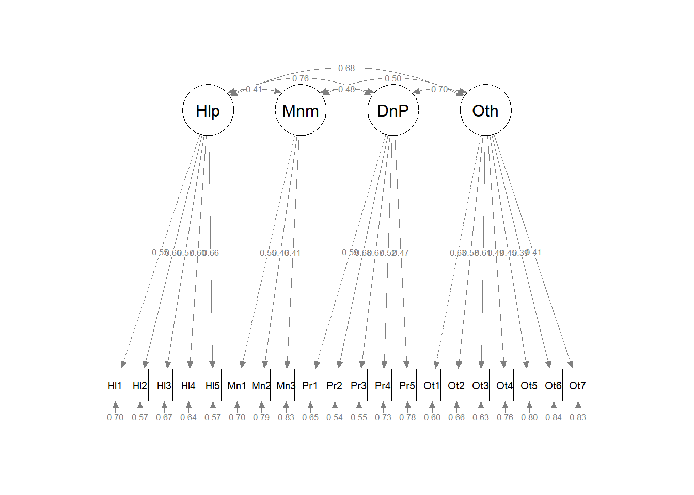
# displays estimates/unstandardized regression weights
# semPlot::semPaths(AMS4CorrFit, layout = 'tree', style = 'lisrel',
# what = 'col', whatLabels = 'est')Our fit is fairly similar to what Conover et al. reported in their article. Specifically, their four-factor, correlated factors model, had a statistically significant chi-square. Regarding fit: CFI = .89, SRMR = .07, and RMSEA = .07 CI90% (.06, .07). As researchers, they were satisfied with the result and they asked the question, “Is measure invariant across disability severity.” A first (but not complete) step is to evaluate the model, separately for the groups of interest. In their case it was mild (where they combined mild and moderate levels of severity) and severe (combining severe and very severe levels).
12.4.4 Baseline Model when Severity = Mild
Let’s start by subsetting the data.
Let’s run the CFA model for those participants whose data were classified as “mild.”
set.seed(240504)
MildFit <- lavaan::cfa(AMS4CorrMod, data = mild_df)
lavaan::summary(MildFit, fit.measures = TRUE, standardized = TRUE)lavaan 0.6.17 ended normally after 46 iterations
Estimator ML
Optimization method NLMINB
Number of model parameters 46
Number of observations 548
Model Test User Model:
Test statistic 165.227
Degrees of freedom 164
P-value (Chi-square) 0.458
Model Test Baseline Model:
Test statistic 1561.967
Degrees of freedom 190
P-value 0.000
User Model versus Baseline Model:
Comparative Fit Index (CFI) 0.999
Tucker-Lewis Index (TLI) 0.999
Loglikelihood and Information Criteria:
Loglikelihood user model (H0) -12518.845
Loglikelihood unrestricted model (H1) -12436.231
Akaike (AIC) 25129.689
Bayesian (BIC) 25327.778
Sample-size adjusted Bayesian (SABIC) 25181.755
Root Mean Square Error of Approximation:
RMSEA 0.004
90 Percent confidence interval - lower 0.000
90 Percent confidence interval - upper 0.020
P-value H_0: RMSEA <= 0.050 1.000
P-value H_0: RMSEA >= 0.080 0.000
Standardized Root Mean Square Residual:
SRMR 0.031
Parameter Estimates:
Standard errors Standard
Information Expected
Information saturated (h1) model Structured
Latent Variables:
Estimate Std.Err z-value P(>|z|) Std.lv Std.all
Helplessness =~
Help1 1.000 0.435 0.574
Help2 1.066 0.116 9.227 0.000 0.464 0.581
Help3 0.966 0.115 8.382 0.000 0.420 0.499
Help4 0.857 0.110 7.803 0.000 0.373 0.451
Help5 0.959 0.113 8.473 0.000 0.417 0.507
Minimization =~
Min1 1.000 0.529 0.639
Min2 0.550 0.137 4.000 0.000 0.291 0.358
Min3 0.509 0.129 3.934 0.000 0.269 0.339
DenialPersonhood =~
Per1 1.000 0.422 0.501
Per2 1.254 0.132 9.487 0.000 0.530 0.691
Per3 1.082 0.121 8.912 0.000 0.457 0.597
Per4 0.736 0.105 7.007 0.000 0.311 0.405
Per5 0.736 0.110 6.717 0.000 0.311 0.382
Otherization =~
Oth1 1.000 0.554 0.645
Oth2 0.811 0.084 9.691 0.000 0.449 0.542
Oth3 0.819 0.083 9.892 0.000 0.454 0.558
Oth4 0.662 0.084 7.835 0.000 0.367 0.417
Oth5 0.511 0.073 7.040 0.000 0.283 0.369
Oth6 0.545 0.076 7.176 0.000 0.302 0.377
Oth7 0.448 0.073 6.104 0.000 0.248 0.315
Covariances:
Estimate Std.Err z-value P(>|z|) Std.lv Std.all
Helplessness ~~
Minimization 0.057 0.018 3.143 0.002 0.249 0.249
DenialPersonhd 0.128 0.019 6.889 0.000 0.699 0.699
Otherization 0.153 0.021 7.266 0.000 0.634 0.634
Minimization ~~
DenialPersonhd 0.088 0.019 4.612 0.000 0.396 0.396
Otherization 0.098 0.023 4.201 0.000 0.335 0.335
DenialPersonhood ~~
Otherization 0.165 0.023 7.268 0.000 0.705 0.705
Variances:
Estimate Std.Err z-value P(>|z|) Std.lv Std.all
.Help1 0.384 0.029 13.388 0.000 0.384 0.670
.Help2 0.423 0.032 13.286 0.000 0.423 0.663
.Help3 0.533 0.037 14.441 0.000 0.533 0.751
.Help4 0.543 0.036 14.930 0.000 0.543 0.796
.Help5 0.503 0.035 14.349 0.000 0.503 0.743
.Min1 0.406 0.071 5.741 0.000 0.406 0.592
.Min2 0.575 0.041 13.887 0.000 0.575 0.872
.Min3 0.558 0.039 14.255 0.000 0.558 0.885
.Per1 0.531 0.036 14.736 0.000 0.531 0.749
.Per2 0.306 0.027 11.455 0.000 0.306 0.522
.Per3 0.378 0.028 13.521 0.000 0.378 0.644
.Per4 0.493 0.032 15.501 0.000 0.493 0.836
.Per5 0.566 0.036 15.637 0.000 0.566 0.854
.Oth1 0.431 0.035 12.460 0.000 0.431 0.584
.Oth2 0.484 0.034 14.178 0.000 0.484 0.706
.Oth3 0.456 0.033 13.976 0.000 0.456 0.689
.Oth4 0.640 0.042 15.366 0.000 0.640 0.826
.Oth5 0.509 0.033 15.667 0.000 0.509 0.864
.Oth6 0.553 0.035 15.621 0.000 0.553 0.858
.Oth7 0.561 0.035 15.935 0.000 0.561 0.901
Helplessness 0.189 0.031 6.153 0.000 1.000 1.000
Minimization 0.280 0.074 3.774 0.000 1.000 1.000
DenialPersonhd 0.178 0.033 5.434 0.000 1.000 1.000
Otherization 0.307 0.043 7.182 0.000 1.000 1.000Not surprisingly, our results are similar to the total group. I notice that the pattern coefficients wiggle around a little more (one as low as .13) but that the fit indices seem a little stronger.
| Criteria | Mild | Severe |
|---|---|---|
| Factor loadings: Help | 0.451 to 0.581 | |
| Factor loadings: Min | 0.339 to 0.639 | |
| Factor loadings: Pers | 0.382 to 0.691 | |
| Factor loadings: Oth | 0.315 to 0.645 | |
| Non-significant chi-square | \(p = 0.458\) | |
| \(CFI\geq .95\) | CFI = 0.999 | |
| \(SRMR\leq .08\) (but definitely < .10) | SRMR = 0.031 | |
| \(RMSEA\leq .05\) (but definitely < .10) | RMSEA = 0.004, 90%CI(0.000, 0.020) |
12.4.5 Baseline Model when Severity = Severe
Let’s run the CFA model again for those participants whose data were classified as “severe.”
set.seed(240504)
SevereFit <- lavaan::cfa(AMS4CorrMod, data = severe_df)
lavaan::summary(SevereFit, fit.measures = TRUE, standardized = TRUE)lavaan 0.6.17 ended normally after 57 iterations
Estimator ML
Optimization method NLMINB
Number of model parameters 46
Number of observations 285
Model Test User Model:
Test statistic 162.345
Degrees of freedom 164
P-value (Chi-square) 0.522
Model Test Baseline Model:
Test statistic 892.916
Degrees of freedom 190
P-value 0.000
User Model versus Baseline Model:
Comparative Fit Index (CFI) 1.000
Tucker-Lewis Index (TLI) 1.003
Loglikelihood and Information Criteria:
Loglikelihood user model (H0) -6567.990
Loglikelihood unrestricted model (H1) -6486.817
Akaike (AIC) 13227.980
Bayesian (BIC) 13395.994
Sample-size adjusted Bayesian (SABIC) 13250.125
Root Mean Square Error of Approximation:
RMSEA 0.000
90 Percent confidence interval - lower 0.000
90 Percent confidence interval - upper 0.026
P-value H_0: RMSEA <= 0.050 1.000
P-value H_0: RMSEA >= 0.080 0.000
Standardized Root Mean Square Residual:
SRMR 0.044
Parameter Estimates:
Standard errors Standard
Information Expected
Information saturated (h1) model Structured
Latent Variables:
Estimate Std.Err z-value P(>|z|) Std.lv Std.all
Helplessness =~
Help1 1.000 0.314 0.408
Help2 1.454 0.285 5.096 0.000 0.457 0.553
Help3 1.448 0.290 5.001 0.000 0.455 0.527
Help4 1.313 0.262 5.007 0.000 0.412 0.529
Help5 1.741 0.325 5.352 0.000 0.546 0.642
Minimization =~
Min1 1.000 0.322 0.407
Min2 1.151 0.317 3.633 0.000 0.371 0.472
Min3 1.331 0.362 3.676 0.000 0.429 0.527
DenialPersonhood =~
Per1 1.000 0.488 0.558
Per2 0.895 0.145 6.180 0.000 0.437 0.544
Per3 1.163 0.171 6.795 0.000 0.568 0.687
Per4 0.653 0.130 5.036 0.000 0.319 0.403
Per5 0.647 0.144 4.491 0.000 0.316 0.349
Otherization =~
Oth1 1.000 0.542 0.621
Oth2 0.823 0.114 7.202 0.000 0.446 0.578
Oth3 0.807 0.119 6.811 0.000 0.438 0.534
Oth4 0.838 0.127 6.619 0.000 0.454 0.514
Oth5 0.548 0.097 5.663 0.000 0.297 0.423
Oth6 0.566 0.106 5.325 0.000 0.307 0.393
Oth7 0.672 0.117 5.738 0.000 0.364 0.429
Covariances:
Estimate Std.Err z-value P(>|z|) Std.lv Std.all
Helplessness ~~
Minimization 0.026 0.012 2.100 0.036 0.259 0.259
DenialPersonhd 0.083 0.021 3.972 0.000 0.543 0.543
Otherization 0.091 0.022 4.123 0.000 0.535 0.535
Minimization ~~
DenialPersonhd 0.047 0.020 2.403 0.016 0.299 0.299
Otherization 0.091 0.026 3.464 0.001 0.522 0.522
DenialPersonhood ~~
Otherization 0.126 0.029 4.372 0.000 0.476 0.476
Variances:
Estimate Std.Err z-value P(>|z|) Std.lv Std.all
.Help1 0.494 0.045 10.995 0.000 0.494 0.834
.Help2 0.474 0.048 9.831 0.000 0.474 0.694
.Help3 0.536 0.053 10.097 0.000 0.536 0.722
.Help4 0.437 0.043 10.083 0.000 0.437 0.720
.Help5 0.426 0.050 8.568 0.000 0.426 0.588
.Min1 0.522 0.054 9.754 0.000 0.522 0.834
.Min2 0.481 0.055 8.742 0.000 0.481 0.778
.Min3 0.477 0.063 7.638 0.000 0.477 0.722
.Per1 0.527 0.055 9.660 0.000 0.527 0.688
.Per2 0.455 0.046 9.829 0.000 0.455 0.704
.Per3 0.361 0.048 7.469 0.000 0.361 0.528
.Per4 0.523 0.048 10.983 0.000 0.523 0.837
.Per5 0.722 0.064 11.260 0.000 0.722 0.878
.Oth1 0.467 0.050 9.390 0.000 0.467 0.614
.Oth2 0.397 0.040 9.910 0.000 0.397 0.666
.Oth3 0.480 0.046 10.329 0.000 0.480 0.715
.Oth4 0.575 0.055 10.493 0.000 0.575 0.736
.Oth5 0.406 0.037 11.066 0.000 0.406 0.821
.Oth6 0.516 0.046 11.207 0.000 0.516 0.846
.Oth7 0.587 0.053 11.031 0.000 0.587 0.816
Helplessness 0.099 0.033 3.029 0.002 1.000 1.000
Minimization 0.104 0.042 2.455 0.014 1.000 1.000
DenialPersonhd 0.238 0.056 4.223 0.000 1.000 1.000
Otherization 0.294 0.059 4.985 0.000 1.000 1.000Our visual inspection of the similarity of psychometric characteristics suggests that the measure is functioning similarly across the two levels of severity.
| Criteria | Mild | Severe |
|---|---|---|
| Factor loadings: Help | 0.451 to 0.581 | 0.408 to 0.642 |
| Factor loadings: Min | 0.339 to 0.639 | 0.407 to 0.527 |
| Factor loadings: Pers | 0.382 to 0.691 | 0.349 to 0.687 |
| Factor loadings: Oth | 0.315 to 0.645 | 0.393 to 0.621 |
| Non-significant chi-square | \(p = 0.458\) | \(p = 0.522\) |
| \(CFI\geq .95\) | CFI = 0.999 | CFI = 1.000 |
| \(SRMR\leq .08\) (but definitely < .10) | SRMR = 0.044 | |
| \(RMSEA\leq .05\) (but definitely < .10) | RMSEA = 0.004, 90%CI(0.000, 0.026) |
This, though, does not constitute a formal evaluation. Thus, we continue with testing for multigroup invariance.
12.5 Configural Invariance
Configural invariance is our least restrictive level. We are essentially specifying ONE STRUCTURE – four correlated factors, each with 3 to 7 items/indicators. Each model is allowed to have its own loadings, error variances, and so forth. It’s only the structure (the configuration) that is consistent.
The same model we had before works. We create the configural model simply by specifying group = “Severity” in the cfa() function.
set.seed(240504)
configural <- lavaan::cfa(AMS4CorrMod, data = dfAMSi, group = "Group")
lavaan::summary(configural, fit.measures = TRUE, standardized = TRUE)lavaan 0.6.17 ended normally after 87 iterations
Estimator ML
Optimization method NLMINB
Number of model parameters 132
Number of observations per group:
Mild 548
Severe 285
Model Test User Model:
Test statistic 327.572
Degrees of freedom 328
P-value (Chi-square) 0.496
Test statistic for each group:
Mild 165.227
Severe 162.345
Model Test Baseline Model:
Test statistic 2454.883
Degrees of freedom 380
P-value 0.000
User Model versus Baseline Model:
Comparative Fit Index (CFI) 1.000
Tucker-Lewis Index (TLI) 1.000
Loglikelihood and Information Criteria:
Loglikelihood user model (H0) -19086.834
Loglikelihood unrestricted model (H1) -18923.048
Akaike (AIC) 38437.669
Bayesian (BIC) 39061.373
Sample-size adjusted Bayesian (SABIC) 38642.187
Root Mean Square Error of Approximation:
RMSEA 0.000
90 Percent confidence interval - lower 0.000
90 Percent confidence interval - upper 0.018
P-value H_0: RMSEA <= 0.050 1.000
P-value H_0: RMSEA >= 0.080 0.000
Standardized Root Mean Square Residual:
SRMR 0.034
Parameter Estimates:
Standard errors Standard
Information Expected
Information saturated (h1) model Structured
Group 1 [Mild]:
Latent Variables:
Estimate Std.Err z-value P(>|z|) Std.lv Std.all
Helplessness =~
Help1 1.000 0.435 0.574
Help2 1.066 0.116 9.227 0.000 0.464 0.581
Help3 0.966 0.115 8.382 0.000 0.420 0.499
Help4 0.857 0.110 7.803 0.000 0.373 0.451
Help5 0.959 0.113 8.473 0.000 0.417 0.507
Minimization =~
Min1 1.000 0.529 0.639
Min2 0.550 0.137 4.000 0.000 0.291 0.358
Min3 0.509 0.129 3.934 0.000 0.269 0.339
DenialPersonhood =~
Per1 1.000 0.422 0.501
Per2 1.254 0.132 9.487 0.000 0.530 0.691
Per3 1.082 0.121 8.913 0.000 0.457 0.597
Per4 0.736 0.105 7.007 0.000 0.311 0.405
Per5 0.736 0.110 6.717 0.000 0.311 0.382
Otherization =~
Oth1 1.000 0.554 0.645
Oth2 0.811 0.084 9.691 0.000 0.449 0.542
Oth3 0.819 0.083 9.892 0.000 0.454 0.558
Oth4 0.662 0.084 7.835 0.000 0.367 0.417
Oth5 0.511 0.073 7.040 0.000 0.283 0.369
Oth6 0.545 0.076 7.176 0.000 0.302 0.377
Oth7 0.448 0.073 6.104 0.000 0.248 0.315
Covariances:
Estimate Std.Err z-value P(>|z|) Std.lv Std.all
Helplessness ~~
Minimization 0.057 0.018 3.143 0.002 0.249 0.249
DenialPersonhd 0.128 0.019 6.889 0.000 0.699 0.699
Otherization 0.153 0.021 7.266 0.000 0.634 0.634
Minimization ~~
DenialPersonhd 0.088 0.019 4.612 0.000 0.396 0.396
Otherization 0.098 0.023 4.201 0.000 0.335 0.335
DenialPersonhood ~~
Otherization 0.165 0.023 7.269 0.000 0.705 0.705
Intercepts:
Estimate Std.Err z-value P(>|z|) Std.lv Std.all
.Help1 1.978 0.032 61.199 0.000 1.978 2.614
.Help2 2.400 0.034 70.342 0.000 2.400 3.005
.Help3 2.137 0.036 59.392 0.000 2.137 2.537
.Help4 2.226 0.035 63.090 0.000 2.226 2.695
.Help5 2.020 0.035 57.490 0.000 2.020 2.456
.Min1 2.401 0.035 67.896 0.000 2.401 2.900
.Min2 2.343 0.035 67.532 0.000 2.343 2.885
.Min3 2.631 0.034 77.574 0.000 2.631 3.314
.Per1 2.086 0.036 57.955 0.000 2.086 2.476
.Per2 2.109 0.033 64.478 0.000 2.109 2.754
.Per3 2.553 0.033 78.028 0.000 2.553 3.333
.Per4 2.381 0.033 72.580 0.000 2.381 3.100
.Per5 2.148 0.035 61.774 0.000 2.148 2.639
.Oth1 2.673 0.037 72.839 0.000 2.673 3.112
.Oth2 2.628 0.035 74.257 0.000 2.628 3.172
.Oth3 2.117 0.035 60.924 0.000 2.117 2.603
.Oth4 2.407 0.038 64.037 0.000 2.407 2.736
.Oth5 2.489 0.033 75.903 0.000 2.489 3.242
.Oth6 2.620 0.034 76.425 0.000 2.620 3.265
.Oth7 2.104 0.034 62.432 0.000 2.104 2.667
Variances:
Estimate Std.Err z-value P(>|z|) Std.lv Std.all
.Help1 0.384 0.029 13.388 0.000 0.384 0.670
.Help2 0.423 0.032 13.286 0.000 0.423 0.663
.Help3 0.533 0.037 14.441 0.000 0.533 0.751
.Help4 0.543 0.036 14.930 0.000 0.543 0.796
.Help5 0.503 0.035 14.349 0.000 0.503 0.743
.Min1 0.406 0.071 5.741 0.000 0.406 0.592
.Min2 0.575 0.041 13.887 0.000 0.575 0.872
.Min3 0.558 0.039 14.255 0.000 0.558 0.885
.Per1 0.531 0.036 14.736 0.000 0.531 0.749
.Per2 0.306 0.027 11.455 0.000 0.306 0.522
.Per3 0.378 0.028 13.521 0.000 0.378 0.644
.Per4 0.493 0.032 15.501 0.000 0.493 0.836
.Per5 0.566 0.036 15.637 0.000 0.566 0.854
.Oth1 0.431 0.035 12.460 0.000 0.431 0.584
.Oth2 0.484 0.034 14.178 0.000 0.484 0.706
.Oth3 0.456 0.033 13.976 0.000 0.456 0.689
.Oth4 0.640 0.042 15.366 0.000 0.640 0.826
.Oth5 0.509 0.033 15.667 0.000 0.509 0.864
.Oth6 0.553 0.035 15.621 0.000 0.553 0.858
.Oth7 0.561 0.035 15.935 0.000 0.561 0.901
Helplessness 0.189 0.031 6.153 0.000 1.000 1.000
Minimization 0.280 0.074 3.774 0.000 1.000 1.000
DenialPersonhd 0.178 0.033 5.434 0.000 1.000 1.000
Otherization 0.307 0.043 7.182 0.000 1.000 1.000
Group 2 [Severe]:
Latent Variables:
Estimate Std.Err z-value P(>|z|) Std.lv Std.all
Helplessness =~
Help1 1.000 0.314 0.408
Help2 1.454 0.285 5.096 0.000 0.457 0.553
Help3 1.448 0.290 5.001 0.000 0.455 0.527
Help4 1.313 0.262 5.007 0.000 0.412 0.529
Help5 1.741 0.325 5.352 0.000 0.546 0.642
Minimization =~
Min1 1.000 0.322 0.407
Min2 1.151 0.317 3.633 0.000 0.371 0.472
Min3 1.331 0.362 3.676 0.000 0.429 0.527
DenialPersonhood =~
Per1 1.000 0.488 0.558
Per2 0.895 0.145 6.180 0.000 0.437 0.544
Per3 1.163 0.171 6.796 0.000 0.568 0.687
Per4 0.653 0.130 5.036 0.000 0.319 0.403
Per5 0.647 0.144 4.491 0.000 0.316 0.349
Otherization =~
Oth1 1.000 0.542 0.621
Oth2 0.823 0.114 7.202 0.000 0.446 0.578
Oth3 0.807 0.119 6.811 0.000 0.438 0.534
Oth4 0.838 0.127 6.619 0.000 0.454 0.514
Oth5 0.548 0.097 5.663 0.000 0.297 0.423
Oth6 0.566 0.106 5.325 0.000 0.307 0.393
Oth7 0.672 0.117 5.738 0.000 0.364 0.429
Covariances:
Estimate Std.Err z-value P(>|z|) Std.lv Std.all
Helplessness ~~
Minimization 0.026 0.012 2.100 0.036 0.259 0.259
DenialPersonhd 0.083 0.021 3.972 0.000 0.543 0.543
Otherization 0.091 0.022 4.123 0.000 0.535 0.535
Minimization ~~
DenialPersonhd 0.047 0.020 2.403 0.016 0.299 0.299
Otherization 0.091 0.026 3.464 0.001 0.522 0.522
DenialPersonhood ~~
Otherization 0.126 0.029 4.372 0.000 0.476 0.476
Intercepts:
Estimate Std.Err z-value P(>|z|) Std.lv Std.all
.Help1 2.411 0.046 52.851 0.000 2.411 3.131
.Help2 3.140 0.049 64.193 0.000 3.140 3.802
.Help3 2.733 0.051 53.536 0.000 2.733 3.171
.Help4 2.996 0.046 64.929 0.000 2.996 3.846
.Help5 2.860 0.050 56.731 0.000 2.860 3.360
.Min1 2.712 0.047 57.873 0.000 2.712 3.428
.Min2 2.677 0.047 57.464 0.000 2.677 3.404
.Min3 2.849 0.048 59.141 0.000 2.849 3.503
.Per1 2.698 0.052 52.077 0.000 2.698 3.085
.Per2 2.660 0.048 55.883 0.000 2.660 3.310
.Per3 3.133 0.049 63.960 0.000 3.133 3.789
.Per4 2.986 0.047 63.795 0.000 2.986 3.779
.Per5 2.730 0.054 50.838 0.000 2.730 3.011
.Oth1 3.025 0.052 58.540 0.000 3.025 3.468
.Oth2 3.021 0.046 66.060 0.000 3.021 3.913
.Oth3 2.667 0.049 54.944 0.000 2.667 3.255
.Oth4 2.818 0.052 53.832 0.000 2.818 3.189
.Oth5 2.867 0.042 68.820 0.000 2.867 4.077
.Oth6 2.842 0.046 61.425 0.000 2.842 3.638
.Oth7 2.481 0.050 49.362 0.000 2.481 2.924
Variances:
Estimate Std.Err z-value P(>|z|) Std.lv Std.all
.Help1 0.494 0.045 10.995 0.000 0.494 0.834
.Help2 0.474 0.048 9.831 0.000 0.474 0.694
.Help3 0.536 0.053 10.098 0.000 0.536 0.722
.Help4 0.437 0.043 10.083 0.000 0.437 0.720
.Help5 0.426 0.050 8.568 0.000 0.426 0.588
.Min1 0.522 0.054 9.754 0.000 0.522 0.834
.Min2 0.481 0.055 8.742 0.000 0.481 0.778
.Min3 0.477 0.063 7.638 0.000 0.477 0.722
.Per1 0.527 0.055 9.660 0.000 0.527 0.688
.Per2 0.455 0.046 9.829 0.000 0.455 0.704
.Per3 0.361 0.048 7.469 0.000 0.361 0.528
.Per4 0.523 0.048 10.983 0.000 0.523 0.837
.Per5 0.722 0.064 11.260 0.000 0.722 0.878
.Oth1 0.467 0.050 9.390 0.000 0.467 0.614
.Oth2 0.397 0.040 9.910 0.000 0.397 0.666
.Oth3 0.480 0.046 10.329 0.000 0.480 0.715
.Oth4 0.575 0.055 10.493 0.000 0.575 0.736
.Oth5 0.406 0.037 11.066 0.000 0.406 0.821
.Oth6 0.516 0.046 11.207 0.000 0.516 0.846
.Oth7 0.587 0.053 11.031 0.000 0.587 0.816
Helplessness 0.099 0.033 3.029 0.002 1.000 1.000
Minimization 0.104 0.042 2.455 0.014 1.000 1.000
DenialPersonhd 0.238 0.056 4.223 0.000 1.000 1.000
Otherization 0.294 0.059 4.985 0.000 1.000 1.000Let’s format these results into tables.
ConfigFitStats <- tidySEM::table_fit(configural)
Config_paramEsts <- tidySEM::table_results(configural, digits = 3, columns = NULL)
ConfigCorrs <- tidySEM::table_cors(configural, digits = 3)
# to see each of the tables, remove the hashtab ConfigFitStats
# Config_paramEsts ConfigCorrsThen, export them.
write.csv(ConfigFitStats, file = "ConfigFitStats.csv")
write.csv(Config_paramEsts, file = "Config_paramEsts.csv")
write.csv(ConfigCorrs, file = "ConfigCorrs.csv")Examining the plots can help us understand what we’ve just done. This will result in two tables, one for each of the models. Recall, we are requiring the structure to be the same, but allowing the values to vary.
# semPlot::semPaths(configural, layout = 'tree', style = 'lisrel',
# what = 'col', whatLabels = 'stand')
semPlot::semPaths(configural, layout = "tree", style = "lisrel", what = "col",
whatLabels = "est")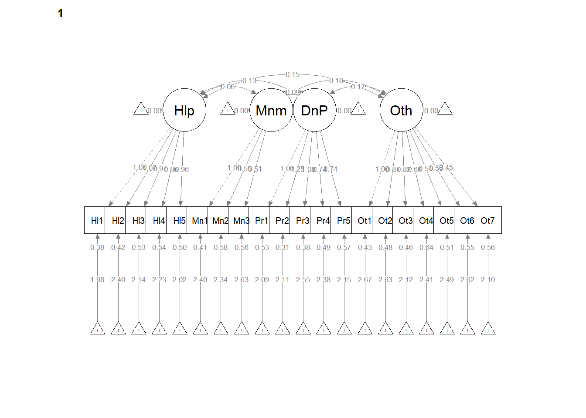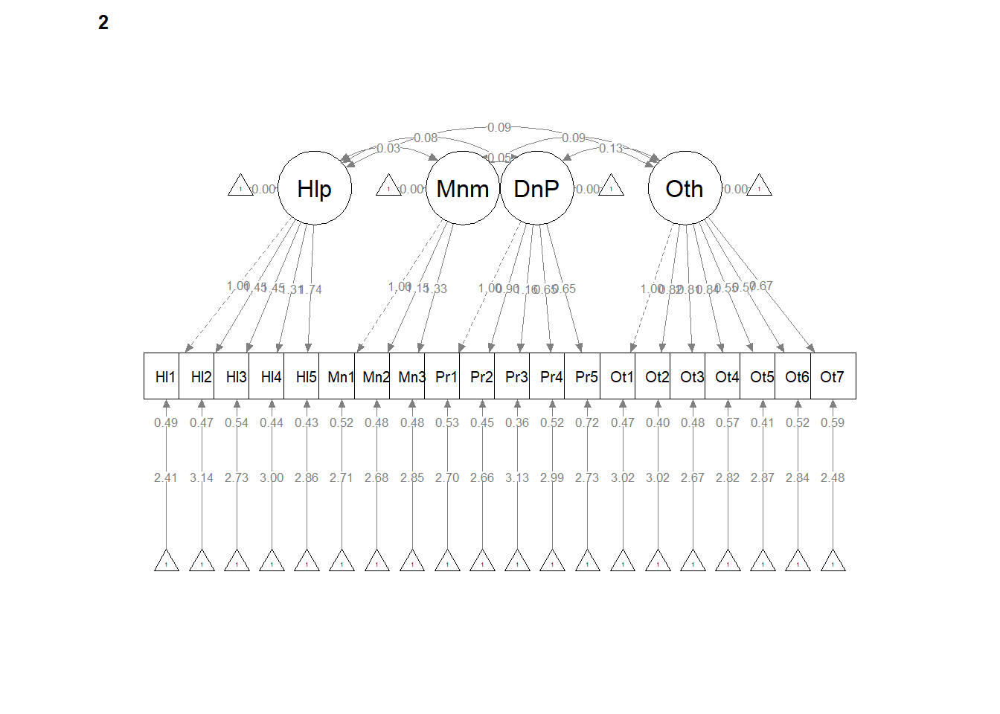
# If R stalls, open the console. I received the instruction, 'Hit
# <Return> to see next plot:' Then it ran!semPath() automatically produced TWO figures. Toggling between them, we see the configuration is the same, but some of the values change on the paths. In the next models we’ll tighten those down.
12.5.1 Interpreting the Output
| Criteria | Our Results | Criteria met? |
|---|---|---|
| Mild: factor loadings significant, strong, proper valence | Help: 0.45 to 0.58; Min: 0.34 to 0.64; Pers: 0.38 to 0.69; Oth: 0.32 to 0.65 | |
| Yes | ||
| Severe: factor loadings significant, strong, proper valence | Help: 0.41 to 0.64; Min: 0.41 to 0.47; Pers: 0.35 to 0.56; Oth: 0.39 to 0.62 | |
| Yes | ||
| Non-significant chi-square | \(\chi ^{2}(328) = 327.57, p = 0.496\) | Yes |
| \(CFI\geq .95\) or \(CFI\geq .90\) | CFI = 1.000 | Yes |
| \(RMSEA\leq .05\) (but definitely < .10) | RMSEA = 0.000, 90%CI(0.000, 0.018) | Yes |
| \(SRMR\leq .08\) (but definitely < .10) | SRMR = 0.032 | Yes |
| Combination rule: \(CFI \geq .95\) and \(SRMR \leq .08\) | CFI = 1.000 SRMR = 0.034 | Yes |
12.5.2 Partial Write-up
Configural Model. The configural model, which constrained only the relative configuration of variables in the model to be the same in both groups had adequate fit to the data: \(\chi ^{2}(328) = 327.57, p = 0.496\), CFI = 1.000, SRMR = 0.034, RMSEA = 0.000, 90%CI(0.000, 0.018).
12.6 Weak Invariance
Weak invariance is predicated on configural invariance and it adds cross-group equality constraints on the pattern (factor) loadings.
A priori, we know this will not (can not) be better than configural invariance. We are simply hoping that it is the same or not statistically, significantly different.
set.seed(240504)
weak <- lavaan::cfa(AMS4CorrMod, data = dfAMSi, group = "Group", group.equal = "loadings")
lavaan::summary(weak, fit.measures = TRUE, standardized = TRUE)lavaan 0.6.17 ended normally after 65 iterations
Estimator ML
Optimization method NLMINB
Number of model parameters 132
Number of equality constraints 16
Number of observations per group:
Mild 548
Severe 285
Model Test User Model:
Test statistic 352.993
Degrees of freedom 344
P-value (Chi-square) 0.357
Test statistic for each group:
Mild 173.702
Severe 179.291
Model Test Baseline Model:
Test statistic 2454.883
Degrees of freedom 380
P-value 0.000
User Model versus Baseline Model:
Comparative Fit Index (CFI) 0.996
Tucker-Lewis Index (TLI) 0.995
Loglikelihood and Information Criteria:
Loglikelihood user model (H0) -19099.545
Loglikelihood unrestricted model (H1) -18923.048
Akaike (AIC) 38431.089
Bayesian (BIC) 38979.193
Sample-size adjusted Bayesian (SABIC) 38610.817
Root Mean Square Error of Approximation:
RMSEA 0.008
90 Percent confidence interval - lower 0.000
90 Percent confidence interval - upper 0.020
P-value H_0: RMSEA <= 0.050 1.000
P-value H_0: RMSEA >= 0.080 0.000
Standardized Root Mean Square Residual:
SRMR 0.039
Parameter Estimates:
Standard errors Standard
Information Expected
Information saturated (h1) model Structured
Group 1 [Mild]:
Latent Variables:
Estimate Std.Err z-value P(>|z|) Std.lv Std.all
Helplessness =~
Help1 1.000 0.393 0.528
Help2 (.p2.) 1.161 0.110 10.543 0.000 0.456 0.572
Help3 (.p3.) 1.084 0.110 9.866 0.000 0.426 0.504
Help4 (.p4.) 0.982 0.103 9.554 0.000 0.385 0.465
Help5 (.p5.) 1.150 0.111 10.317 0.000 0.452 0.541
Minimization =~
Min1 1.000 0.434 0.530
Min2 (.p7.) 0.750 0.133 5.625 0.000 0.326 0.399
Min3 (.p8.) 0.751 0.134 5.622 0.000 0.326 0.407
DenialPersonhood =~
Per1 1.000 0.439 0.518
Per2 (.10.) 1.141 0.100 11.455 0.000 0.501 0.664
Per3 (.11.) 1.097 0.098 11.195 0.000 0.481 0.620
Per4 (.12.) 0.720 0.083 8.730 0.000 0.316 0.411
Per5 (.13.) 0.701 0.087 8.047 0.000 0.307 0.378
Otherization =~
Oth1 1.000 0.542 0.635
Oth2 (.15.) 0.819 0.068 12.115 0.000 0.444 0.537
Oth3 (.16.) 0.816 0.068 11.999 0.000 0.443 0.547
Oth4 (.17.) 0.720 0.070 10.253 0.000 0.391 0.440
Oth5 (.18.) 0.520 0.058 8.993 0.000 0.282 0.368
Oth6 (.19.) 0.556 0.062 8.977 0.000 0.301 0.375
Oth7 (.20.) 0.518 0.062 8.301 0.000 0.281 0.352
Covariances:
Estimate Std.Err z-value P(>|z|) Std.lv Std.all
Helplessness ~~
Minimization 0.045 0.014 3.104 0.002 0.262 0.262
DenialPersonhd 0.120 0.016 7.415 0.000 0.699 0.699
Otherization 0.135 0.018 7.530 0.000 0.636 0.636
Minimization ~~
DenialPersonhd 0.077 0.017 4.517 0.000 0.405 0.405
Otherization 0.084 0.020 4.179 0.000 0.356 0.356
DenialPersonhood ~~
Otherization 0.167 0.021 7.987 0.000 0.703 0.703
Intercepts:
Estimate Std.Err z-value P(>|z|) Std.lv Std.all
.Help1 1.978 0.032 62.311 0.000 1.978 2.662
.Help2 2.400 0.034 70.483 0.000 2.400 3.011
.Help3 2.137 0.036 59.244 0.000 2.137 2.531
.Help4 2.226 0.035 62.823 0.000 2.226 2.684
.Help5 2.020 0.036 56.683 0.000 2.020 2.421
.Min1 2.401 0.035 68.644 0.000 2.401 2.932
.Min2 2.343 0.035 67.268 0.000 2.343 2.874
.Min3 2.631 0.034 76.874 0.000 2.631 3.284
.Per1 2.086 0.036 57.629 0.000 2.086 2.462
.Per2 2.109 0.032 65.455 0.000 2.109 2.796
.Per3 2.553 0.033 77.033 0.000 2.553 3.291
.Per4 2.381 0.033 72.525 0.000 2.381 3.098
.Per5 2.148 0.035 61.873 0.000 2.148 2.643
.Oth1 2.673 0.036 73.298 0.000 2.673 3.131
.Oth2 2.628 0.035 74.445 0.000 2.628 3.180
.Oth3 2.117 0.035 61.266 0.000 2.117 2.617
.Oth4 2.407 0.038 63.475 0.000 2.407 2.712
.Oth5 2.489 0.033 75.949 0.000 2.489 3.244
.Oth6 2.620 0.034 76.426 0.000 2.620 3.265
.Oth7 2.104 0.034 61.765 0.000 2.104 2.638
Variances:
Estimate Std.Err z-value P(>|z|) Std.lv Std.all
.Help1 0.398 0.028 14.249 0.000 0.398 0.721
.Help2 0.427 0.031 13.649 0.000 0.427 0.673
.Help3 0.532 0.037 14.545 0.000 0.532 0.746
.Help4 0.540 0.036 14.958 0.000 0.540 0.784
.Help5 0.492 0.035 14.104 0.000 0.492 0.707
.Min1 0.482 0.047 10.160 0.000 0.482 0.719
.Min2 0.559 0.041 13.582 0.000 0.559 0.841
.Min3 0.536 0.040 13.416 0.000 0.536 0.834
.Per1 0.525 0.036 14.683 0.000 0.525 0.732
.Per2 0.319 0.026 12.373 0.000 0.319 0.560
.Per3 0.370 0.028 13.281 0.000 0.370 0.616
.Per4 0.491 0.032 15.530 0.000 0.491 0.831
.Per5 0.566 0.036 15.707 0.000 0.566 0.857
.Oth1 0.435 0.034 12.947 0.000 0.435 0.597
.Oth2 0.486 0.034 14.444 0.000 0.486 0.711
.Oth3 0.458 0.032 14.305 0.000 0.458 0.700
.Oth4 0.635 0.041 15.312 0.000 0.635 0.806
.Oth5 0.509 0.032 15.757 0.000 0.509 0.865
.Oth6 0.553 0.035 15.710 0.000 0.553 0.859
.Oth7 0.557 0.035 15.820 0.000 0.557 0.876
Helplessness 0.154 0.024 6.399 0.000 1.000 1.000
Minimization 0.189 0.044 4.307 0.000 1.000 1.000
DenialPersonhd 0.192 0.030 6.427 0.000 1.000 1.000
Otherization 0.294 0.037 7.962 0.000 1.000 1.000
Group 2 [Severe]:
Latent Variables:
Estimate Std.Err z-value P(>|z|) Std.lv Std.all
Helplessness =~
Help1 1.000 0.407 0.510
Help2 (.p2.) 1.161 0.110 10.543 0.000 0.473 0.570
Help3 (.p3.) 1.084 0.110 9.866 0.000 0.442 0.515
Help4 (.p4.) 0.982 0.103 9.554 0.000 0.400 0.517
Help5 (.p5.) 1.150 0.111 10.317 0.000 0.468 0.565
Minimization =~
Min1 1.000 0.432 0.534
Min2 (.p7.) 0.750 0.133 5.625 0.000 0.324 0.415
Min3 (.p8.) 0.751 0.134 5.622 0.000 0.324 0.405
DenialPersonhood =~
Per1 1.000 0.455 0.525
Per2 (.10.) 1.141 0.100 11.455 0.000 0.519 0.625
Per3 (.11.) 1.097 0.098 11.195 0.000 0.499 0.618
Per4 (.12.) 0.720 0.083 8.730 0.000 0.328 0.415
Per5 (.13.) 0.701 0.087 8.047 0.000 0.319 0.351
Otherization =~
Oth1 1.000 0.565 0.640
Oth2 (.15.) 0.819 0.068 12.115 0.000 0.462 0.596
Oth3 (.16.) 0.816 0.068 11.999 0.000 0.461 0.557
Oth4 (.17.) 0.720 0.070 10.253 0.000 0.407 0.468
Oth5 (.18.) 0.520 0.058 8.993 0.000 0.294 0.417
Oth6 (.19.) 0.556 0.062 8.977 0.000 0.314 0.402
Oth7 (.20.) 0.518 0.062 8.301 0.000 0.292 0.352
Covariances:
Estimate Std.Err z-value P(>|z|) Std.lv Std.all
Helplessness ~~
Minimization 0.042 0.020 2.142 0.032 0.240 0.240
DenialPersonhd 0.105 0.020 5.251 0.000 0.565 0.565
Otherization 0.119 0.023 5.175 0.000 0.516 0.516
Minimization ~~
DenialPersonhd 0.060 0.022 2.669 0.008 0.305 0.305
Otherization 0.130 0.029 4.450 0.000 0.531 0.531
DenialPersonhood ~~
Otherization 0.120 0.025 4.801 0.000 0.466 0.466
Intercepts:
Estimate Std.Err z-value P(>|z|) Std.lv Std.all
.Help1 2.411 0.047 50.902 0.000 2.411 3.015
.Help2 3.140 0.049 63.944 0.000 3.140 3.788
.Help3 2.733 0.051 53.787 0.000 2.733 3.186
.Help4 2.996 0.046 65.419 0.000 2.996 3.875
.Help5 2.860 0.049 58.177 0.000 2.860 3.446
.Min1 2.712 0.048 56.634 0.000 2.712 3.355
.Min2 2.677 0.046 57.887 0.000 2.677 3.429
.Min3 2.849 0.047 60.155 0.000 2.849 3.563
.Per1 2.698 0.051 52.630 0.000 2.698 3.118
.Per2 2.660 0.049 54.068 0.000 2.660 3.203
.Per3 3.133 0.048 65.507 0.000 3.133 3.880
.Per4 2.986 0.047 63.887 0.000 2.986 3.784
.Per5 2.730 0.054 50.677 0.000 2.730 3.002
.Oth1 3.025 0.052 57.831 0.000 3.025 3.426
.Oth2 3.021 0.046 65.767 0.000 3.021 3.896
.Oth3 2.667 0.049 54.354 0.000 2.667 3.220
.Oth4 2.818 0.052 54.700 0.000 2.818 3.240
.Oth5 2.867 0.042 68.742 0.000 2.867 4.072
.Oth6 2.842 0.046 61.423 0.000 2.842 3.638
.Oth7 2.481 0.049 50.360 0.000 2.481 2.983
Variances:
Estimate Std.Err z-value P(>|z|) Std.lv Std.all
.Help1 0.473 0.045 10.530 0.000 0.473 0.740
.Help2 0.464 0.047 9.972 0.000 0.464 0.675
.Help3 0.541 0.052 10.477 0.000 0.541 0.735
.Help4 0.438 0.042 10.440 0.000 0.438 0.733
.Help5 0.469 0.047 10.023 0.000 0.469 0.681
.Min1 0.467 0.058 8.110 0.000 0.467 0.715
.Min2 0.505 0.050 10.114 0.000 0.505 0.828
.Min3 0.534 0.052 10.226 0.000 0.534 0.836
.Per1 0.542 0.052 10.354 0.000 0.542 0.724
.Per2 0.420 0.045 9.244 0.000 0.420 0.609
.Per3 0.403 0.043 9.337 0.000 0.403 0.618
.Per4 0.515 0.046 11.086 0.000 0.515 0.828
.Per5 0.725 0.064 11.375 0.000 0.725 0.877
.Oth1 0.460 0.048 9.515 0.000 0.460 0.591
.Oth2 0.388 0.039 10.000 0.000 0.388 0.644
.Oth3 0.473 0.046 10.386 0.000 0.473 0.690
.Oth4 0.591 0.054 10.973 0.000 0.591 0.781
.Oth5 0.409 0.037 11.208 0.000 0.409 0.826
.Oth6 0.512 0.045 11.278 0.000 0.512 0.839
.Oth7 0.606 0.053 11.460 0.000 0.606 0.876
Helplessness 0.166 0.030 5.514 0.000 1.000 1.000
Minimization 0.186 0.050 3.705 0.000 1.000 1.000
DenialPersonhd 0.207 0.037 5.613 0.000 1.000 1.000
Otherization 0.319 0.048 6.674 0.000 1.000 1.000
Chi-Squared Difference Test
Df AIC BIC Chisq Chisq diff RMSEA Df diff Pr(>Chisq)
configural 328 38438 39061 327.57
weak 344 38431 38979 352.99 25.42 0.037598 16 0.06275 .
---
Signif. codes: 0 '***' 0.001 '**' 0.01 '*' 0.05 '.' 0.1 ' ' 1Let’s format these results into tables.
WeakFitStats <- tidySEM::table_fit(weak)
Weak_paramEsts <- tidySEM::table_results(weak, digits = 3, columns = NULL)
WeakCorrs <- tidySEM::table_cors(weak, digits = 3)
# to see each of the tables, remove the hashtag WeakFitStats
# Weak_paramEsts WeakCorrsThen, export them.
write.csv(WeakFitStats, file = "WeakFitStats.csv")
write.csv(Weak_paramEsts, file = "Weak_paramEsts.csv")
write.csv(WeakCorrs, file = "WeakCorrs.csv")12.6.1 Interpreting the Output
Note that although the “Std.all” values differ from each other, the “Estimates” (factor loadings) are identical across Mild and Severe groups. Each also has a “label” (e.g., .p2., .p3.) which indicates that they have been constrained to be equal. The “Std.all” differ between degree of disability severity due to the difference in standard deviations of the indicators.
| Criteria | Our Results | Criteria met? |
|---|---|---|
| Mild: factor loadings significant, strong, proper valence | Help: 0.47 to 0.57; Min: 0.40 to 0.53; Pers: 0.38 to 0.66; Oth: 0.35 to 0.64 | |
| Yes | ||
| Severe: factor loadings significant, strong, proper valence | Help: 0.41 to 0.57; Min: 0.41 to 0.53; Pers: 0.35 to 0.63; Oth: 0.35 to 0.64 | |
| Yes | ||
| Non-significant chi-square | \(\chi ^{2}(344) = 353.00, p = 0.357\) | Yes |
| \(CFI\geq .95\) or \(CFI\geq .90\) | CFI = 0.996 | Yes |
| \(RMSEA\leq .05\) (but definitely < .10) | RMSEA = 0.008, 90%CI(0.000, 0.020) | Yes |
| \(SRMR\leq .08\) (but definitely < .10) | SRMR = 0.035 | Yes |
| Combination rule: \(CFI \geq .95\) and \(SRMR \leq .08\) | CFI = 1.000, SRMR = 0.035 | Yes |
12.6.2 Partial Write-up
Weak invariance model. The weak invariance model constrained the configuration of variables and all factor loadings to be constant across groups. Fit indices were comparable to the configural model: \(\chi ^{2}(344) = 353.00, p = 0.357\), CFI = 0.996, SRMR = 0.039, RMSEA = 0.008, 90%CI(0.000, 0.020. Invariance of the factor loadings was supported by the non-significant difference tests that assessed model similarity: \(\chi_{D}^{2}(16) = 25.42, p = 0.063\); \(\Delta CFI = 0.004\)
[1] 0.004# semPlot::semPaths(weak, layout = 'tree', style = 'lisrel', what =
# 'col', whatLabels = 'stand')
semPlot::semPaths(weak, layout = "tree", style = "lisrel", what = "col",
whatLabels = "est")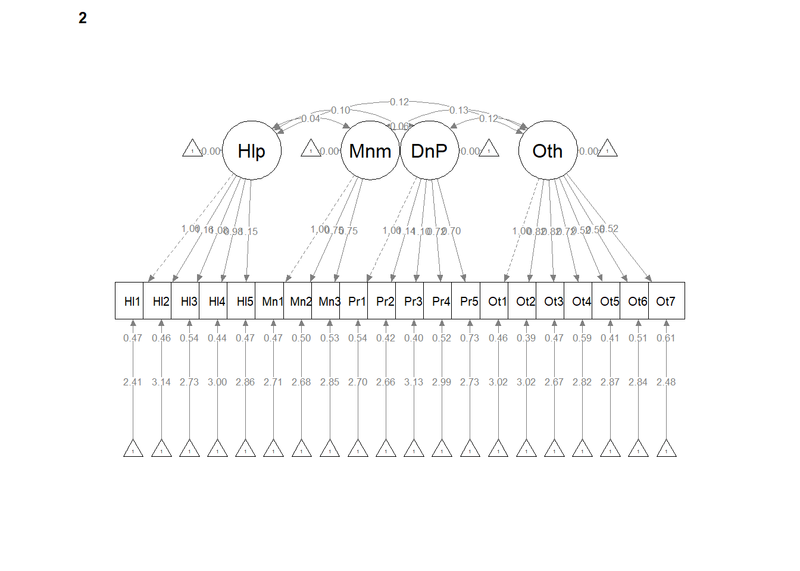
12.7 Strong Invariance
Strong invariance is predicated on configural and weak invariance, but also constrains the indicator means/intercepts.
set.seed(240504)
strong <- lavaan::cfa(AMS4CorrMod, data = dfAMSi, group = "Group", group.equal = c("loadings",
"intercepts"))
lavaan::summary(strong, fit.measures = TRUE, standardized = TRUE)lavaan 0.6.17 ended normally after 87 iterations
Estimator ML
Optimization method NLMINB
Number of model parameters 136
Number of equality constraints 36
Number of observations per group:
Mild 548
Severe 285
Model Test User Model:
Test statistic 412.746
Degrees of freedom 360
P-value (Chi-square) 0.029
Test statistic for each group:
Mild 210.341
Severe 202.405
Model Test Baseline Model:
Test statistic 2454.883
Degrees of freedom 380
P-value 0.000
User Model versus Baseline Model:
Comparative Fit Index (CFI) 0.975
Tucker-Lewis Index (TLI) 0.973
Loglikelihood and Information Criteria:
Loglikelihood user model (H0) -19129.421
Loglikelihood unrestricted model (H1) -18923.048
Akaike (AIC) 38458.843
Bayesian (BIC) 38931.346
Sample-size adjusted Bayesian (SABIC) 38613.781
Root Mean Square Error of Approximation:
RMSEA 0.019
90 Percent confidence interval - lower 0.007
90 Percent confidence interval - upper 0.027
P-value H_0: RMSEA <= 0.050 1.000
P-value H_0: RMSEA >= 0.080 0.000
Standardized Root Mean Square Residual:
SRMR 0.045
Parameter Estimates:
Standard errors Standard
Information Expected
Information saturated (h1) model Structured
Group 1 [Mild]:
Latent Variables:
Estimate Std.Err z-value P(>|z|) Std.lv Std.all
Helplessness =~
Help1 1.000 0.329 0.452
Help2 (.p2.) 1.368 0.106 12.897 0.000 0.451 0.566
Help3 (.p3.) 1.198 0.101 11.831 0.000 0.395 0.473
Help4 (.p4.) 1.291 0.103 12.520 0.000 0.425 0.504
Help5 (.p5.) 1.464 0.112 13.092 0.000 0.482 0.571
Minimization =~
Min1 1.000 0.416 0.509
Min2 (.p7.) 0.851 0.120 7.087 0.000 0.354 0.432
Min3 (.p8.) 0.748 0.111 6.728 0.000 0.311 0.389
DenialPersonhood =~
Per1 1.000 0.444 0.524
Per2 (.10.) 1.044 0.074 14.168 0.000 0.464 0.625
Per3 (.11.) 1.036 0.074 14.036 0.000 0.460 0.600
Per4 (.12.) 0.817 0.068 11.957 0.000 0.363 0.463
Per5 (.13.) 0.786 0.072 10.914 0.000 0.349 0.423
Otherization =~
Oth1 1.000 0.496 0.591
Oth2 (.15.) 0.873 0.066 13.176 0.000 0.433 0.526
Oth3 (.16.) 0.951 0.070 13.628 0.000 0.472 0.576
Oth4 (.17.) 0.803 0.070 11.516 0.000 0.398 0.447
Oth5 (.18.) 0.620 0.058 10.693 0.000 0.308 0.397
Oth6 (.19.) 0.571 0.060 9.517 0.000 0.283 0.355
Oth7 (.20.) 0.616 0.063 9.838 0.000 0.305 0.379
Covariances:
Estimate Std.Err z-value P(>|z|) Std.lv Std.all
Helplessness ~~
Minimization 0.036 0.012 3.106 0.002 0.263 0.263
DenialPersonhd 0.103 0.013 7.913 0.000 0.706 0.706
Otherization 0.103 0.014 7.588 0.000 0.632 0.632
Minimization ~~
DenialPersonhd 0.075 0.016 4.612 0.000 0.404 0.404
Otherization 0.074 0.018 4.232 0.000 0.360 0.360
DenialPersonhood ~~
Otherization 0.156 0.018 8.416 0.000 0.706 0.706
Intercepts:
Estimate Std.Err z-value P(>|z|) Std.lv Std.all
.Help1 (.51.) 1.944 0.029 66.425 0.000 1.944 2.667
.Help2 (.52.) 2.400 0.033 73.804 0.000 2.400 3.013
.Help3 (.53.) 2.119 0.034 63.226 0.000 2.119 2.537
.Help4 (.54.) 2.254 0.034 66.598 0.000 2.254 2.673
.Help5 (.55.) 2.037 0.034 59.104 0.000 2.037 2.410
.Min1 (.56.) 2.394 0.033 71.944 0.000 2.394 2.930
.Min2 (.57.) 2.362 0.033 72.669 0.000 2.362 2.882
.Min3 (.58.) 2.621 0.031 83.690 0.000 2.621 3.279
.Per1 (.59.) 2.089 0.034 61.496 0.000 2.089 2.462
.Per2 (.60.) 2.087 0.030 68.542 0.000 2.087 2.812
.Per3 (.61.) 2.538 0.031 81.214 0.000 2.538 3.307
.Per4 (.62.) 2.418 0.031 77.819 0.000 2.418 3.081
.Per5 (.63.) 2.179 0.033 66.537 0.000 2.179 2.638
.Oth1 (.64.) 2.630 0.034 78.432 0.000 2.630 3.135
.Oth2 (.65.) 2.616 0.032 81.837 0.000 2.616 3.182
.Oth3 (.66.) 2.146 0.033 65.814 0.000 2.146 2.618
.Oth4 (.67.) 2.414 0.034 70.725 0.000 2.414 2.711
.Oth5 (.68.) 2.519 0.029 86.645 0.000 2.519 3.252
.Oth6 (.69.) 2.601 0.030 86.656 0.000 2.601 3.258
.Oth7 (.70.) 2.129 0.031 69.263 0.000 2.129 2.646
Variances:
Estimate Std.Err z-value P(>|z|) Std.lv Std.all
.Help1 0.423 0.028 15.147 0.000 0.423 0.796
.Help2 0.431 0.031 13.925 0.000 0.431 0.680
.Help3 0.542 0.036 14.982 0.000 0.542 0.777
.Help4 0.530 0.036 14.696 0.000 0.530 0.746
.Help5 0.482 0.035 13.866 0.000 0.482 0.674
.Min1 0.495 0.044 11.338 0.000 0.495 0.741
.Min2 0.546 0.041 13.253 0.000 0.546 0.813
.Min3 0.542 0.039 14.020 0.000 0.542 0.848
.Per1 0.522 0.035 14.706 0.000 0.522 0.726
.Per2 0.335 0.025 13.319 0.000 0.335 0.609
.Per3 0.377 0.027 13.755 0.000 0.377 0.640
.Per4 0.484 0.032 15.237 0.000 0.484 0.786
.Per5 0.560 0.036 15.494 0.000 0.560 0.821
.Oth1 0.457 0.033 13.768 0.000 0.457 0.650
.Oth2 0.489 0.033 14.609 0.000 0.489 0.723
.Oth3 0.449 0.032 13.994 0.000 0.449 0.669
.Oth4 0.634 0.041 15.289 0.000 0.634 0.800
.Oth5 0.505 0.032 15.617 0.000 0.505 0.842
.Oth6 0.557 0.035 15.831 0.000 0.557 0.874
.Oth7 0.554 0.035 15.701 0.000 0.554 0.856
Helplessness 0.109 0.016 6.725 0.000 1.000 1.000
Minimization 0.173 0.037 4.734 0.000 1.000 1.000
DenialPersonhd 0.197 0.026 7.454 0.000 1.000 1.000
Otherization 0.246 0.031 7.963 0.000 1.000 1.000
Group 2 [Severe]:
Latent Variables:
Estimate Std.Err z-value P(>|z|) Std.lv Std.all
Helplessness =~
Help1 1.000 0.345 0.442
Help2 (.p2.) 1.368 0.106 12.897 0.000 0.473 0.569
Help3 (.p3.) 1.198 0.101 11.831 0.000 0.414 0.487
Help4 (.p4.) 1.291 0.103 12.520 0.000 0.446 0.564
Help5 (.p5.) 1.464 0.112 13.092 0.000 0.506 0.602
Minimization =~
Min1 1.000 0.417 0.517
Min2 (.p7.) 0.851 0.120 7.087 0.000 0.355 0.451
Min3 (.p8.) 0.748 0.111 6.728 0.000 0.312 0.391
DenialPersonhood =~
Per1 1.000 0.461 0.531
Per2 (.10.) 1.044 0.074 14.168 0.000 0.481 0.588
Per3 (.11.) 1.036 0.074 14.036 0.000 0.477 0.595
Per4 (.12.) 0.817 0.068 11.957 0.000 0.376 0.465
Per5 (.13.) 0.786 0.072 10.914 0.000 0.362 0.392
Otherization =~
Oth1 1.000 0.517 0.594
Oth2 (.15.) 0.873 0.066 13.176 0.000 0.451 0.584
Oth3 (.16.) 0.951 0.070 13.628 0.000 0.492 0.584
Oth4 (.17.) 0.803 0.070 11.516 0.000 0.415 0.477
Oth5 (.18.) 0.620 0.058 10.693 0.000 0.321 0.449
Oth6 (.19.) 0.571 0.060 9.517 0.000 0.295 0.379
Oth7 (.20.) 0.616 0.063 9.838 0.000 0.318 0.380
Covariances:
Estimate Std.Err z-value P(>|z|) Std.lv Std.all
Helplessness ~~
Minimization 0.034 0.016 2.153 0.031 0.239 0.239
DenialPersonhd 0.089 0.017 5.379 0.000 0.560 0.560
Otherization 0.094 0.018 5.303 0.000 0.525 0.525
Minimization ~~
DenialPersonhd 0.060 0.022 2.737 0.006 0.312 0.312
Otherization 0.115 0.025 4.506 0.000 0.532 0.532
DenialPersonhood ~~
Otherization 0.113 0.023 4.926 0.000 0.474 0.474
Intercepts:
Estimate Std.Err z-value P(>|z|) Std.lv Std.all
.Help1 (.51.) 1.944 0.029 66.425 0.000 1.944 2.486
.Help2 (.52.) 2.400 0.033 73.804 0.000 2.400 2.890
.Help3 (.53.) 2.119 0.034 63.226 0.000 2.119 2.492
.Help4 (.54.) 2.254 0.034 66.598 0.000 2.254 2.850
.Help5 (.55.) 2.037 0.034 59.104 0.000 2.037 2.425
.Min1 (.56.) 2.394 0.033 71.944 0.000 2.394 2.970
.Min2 (.57.) 2.362 0.033 72.669 0.000 2.362 3.004
.Min3 (.58.) 2.621 0.031 83.690 0.000 2.621 3.285
.Per1 (.59.) 2.089 0.034 61.496 0.000 2.089 2.407
.Per2 (.60.) 2.087 0.030 68.542 0.000 2.087 2.553
.Per3 (.61.) 2.538 0.031 81.214 0.000 2.538 3.168
.Per4 (.62.) 2.418 0.031 77.819 0.000 2.418 2.991
.Per5 (.63.) 2.179 0.033 66.537 0.000 2.179 2.358
.Oth1 (.64.) 2.630 0.034 78.432 0.000 2.630 3.022
.Oth2 (.65.) 2.616 0.032 81.837 0.000 2.616 3.386
.Oth3 (.66.) 2.146 0.033 65.814 0.000 2.146 2.546
.Oth4 (.67.) 2.414 0.034 70.725 0.000 2.414 2.773
.Oth5 (.68.) 2.519 0.029 86.645 0.000 2.519 3.529
.Oth6 (.69.) 2.601 0.030 86.656 0.000 2.601 3.343
.Oth7 (.70.) 2.129 0.031 69.263 0.000 2.129 2.540
Hlplssn 0.541 0.044 12.314 0.000 1.567 1.567
Minmztn 0.332 0.051 6.518 0.000 0.797 0.797
DnlPrsn 0.604 0.050 12.008 0.000 1.311 1.311
Othrztn 0.485 0.049 9.804 0.000 0.938 0.938
Variances:
Estimate Std.Err z-value P(>|z|) Std.lv Std.all
.Help1 0.492 0.045 11.034 0.000 0.492 0.805
.Help2 0.466 0.046 10.115 0.000 0.466 0.676
.Help3 0.552 0.051 10.771 0.000 0.552 0.763
.Help4 0.427 0.042 10.155 0.000 0.427 0.682
.Help5 0.450 0.046 9.753 0.000 0.450 0.637
.Min1 0.476 0.055 8.720 0.000 0.476 0.733
.Min2 0.493 0.050 9.798 0.000 0.493 0.797
.Min3 0.539 0.051 10.493 0.000 0.539 0.847
.Per1 0.541 0.052 10.349 0.000 0.541 0.718
.Per2 0.437 0.045 9.782 0.000 0.437 0.654
.Per3 0.414 0.043 9.688 0.000 0.414 0.645
.Per4 0.512 0.047 10.829 0.000 0.512 0.784
.Per5 0.722 0.064 11.220 0.000 0.722 0.846
.Oth1 0.490 0.049 10.072 0.000 0.490 0.647
.Oth2 0.393 0.039 10.155 0.000 0.393 0.659
.Oth3 0.468 0.046 10.173 0.000 0.468 0.659
.Oth4 0.585 0.054 10.938 0.000 0.585 0.772
.Oth5 0.407 0.037 11.076 0.000 0.407 0.798
.Oth6 0.518 0.046 11.371 0.000 0.518 0.856
.Oth7 0.601 0.053 11.374 0.000 0.601 0.856
Helplessness 0.119 0.021 5.803 0.000 1.000 1.000
Minimization 0.174 0.044 3.983 0.000 1.000 1.000
DenialPersonhd 0.212 0.034 6.202 0.000 1.000 1.000
Otherization 0.267 0.040 6.679 0.000 1.000 1.000
Chi-Squared Difference Test
Df AIC BIC Chisq Chisq diff RMSEA Df diff Pr(>Chisq)
configural 328 38438 39061 327.57
weak 344 38431 38979 352.99 25.420 0.037598 16 0.06275 .
strong 360 38459 38931 412.75 59.754 0.081029 16 0.0000005758 ***
---
Signif. codes: 0 '***' 0.001 '**' 0.01 '*' 0.05 '.' 0.1 ' ' 1Let’s format these results into tables.
strongFitStats <- tidySEM::table_fit(strong)
strong_paramEsts <- tidySEM::table_results(strong, digits = 3, columns = NULL)
strongCorrs <- tidySEM::table_cors(strong, digits = 3)
# to see each of the tables, remove the hashtag strongFitStats
# strong_paramEsts strongCorrsThen, export them.
write.csv(strongFitStats, file = "strongFitStats.csv")
write.csv(strong_paramEsts, file = "strong_paramEsts.csv")
write.csv(strongCorrs, file = "strongCorrs.csv")# semPlot::semPaths(strong, layout = 'tree', style = 'lisrel', what =
# 'col', whatLabels = 'stand')
semPlot::semPaths(strong, layout = "tree", style = "lisrel", what = "col",
whatLabels = "est")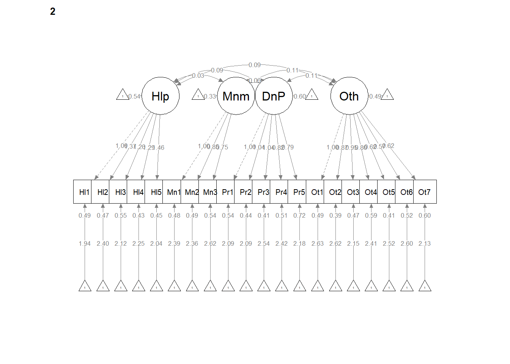
# If R stalls, open the console. I received the instruction, 'Hit
# <Return> to see next plot:' Then it ran!12.7.1 Interpreting the Output
Note that although the “Std.all” values differ from each other, the “Estimates” (factor loadings) are identical across Mild and Severe groups. Each also has a “label” (e.g., .p2., .p3.) which indicates that they have been constrained to be equal. The “Std.all” differ between degree of disability severity due to the difference in standard deviations of the indicators.
| Criteria | Our Results | Criteria met? |
|---|---|---|
| Mild: factor loadings significant, strong, proper valence | Help: 0.45 to 0.57; Min: 0.39 to 0.51; Pers: 0.42 to 0.63; Oth: 0.36 to 0.59 | |
| Yes | ||
| Severe: factor loadings significant, strong, proper valence | Help: 0.44 to 0.60; Min: 0.39 to 0.52; Pers: 0.39 to 0.60; Oth: 0.38 to 0.59 | |
| Yes | ||
| Non-significant chi-square | \(\chi ^{2}(360) = 412.75 p = 0.029\) | No |
| \(CFI\geq .95\) or \(CFI\geq .90\) | CFI = 0.975 | Yes |
| \(RMSEA\leq .05\) (but definitely < .10) | RMSEA = 0.019, CI90%(0.007 to 0.027) | Yes |
| \(SRMR\leq .08\) (but definitely < .10) | SRMR = 0.045 | Yes |
| Combination rule: \(CFI \geq .95\) and \(SRMR \leq .08\) | CFI = .805, SRMR = 0.036 | Yes |
12.7.2 Partial Write-up
Strong invariance model. In the strong invariance model, configuration, factor loadings, and indicator means/intercepts were constrained to be the same for each group. Fit indices were less than ideal: \(\chi ^{2}(360) = 412.75 p = 0.029\), CFI = 0.975, SRMR = 0.045, RMSEA =0.019, CI90%(0.007 to 0.027). The difference tests that evaluated model similarity suggested there was factorial noninvariance: (\(\chi_{D}^{2}(16) = 59.754, p = 0.01\); \(\Delta CFI = 0.021\). Given that the \(\chi_{D}^{2}\) test is statistically significant and the \(\Delta CFI > 0.01\) we cannot claim strong invariance and we therefore do not test stricter models.
[1] 0.021Should I be worried if measurement invariance stops here?
Byrne (2016a) wrote, “Historically, the Joreskog tradition of invariance testing held that the equality of error variances and their covariances should also be tested. However, it is now widely accepted that to do so represents an overly restrictive test of the data” (p. 230).
Further, in an awesome article examining the factorial invariance of the Calling & Vocation Questionnaire (Autin et al., 2017) in a binational sample, strict invariance (the next level of restraint) was not even mentioned. Further, after strong invariance was not achieved the authors wrote, “Therefore, poor fit in only this model does not necessarily indicate the factor structure operates differently for different groups” (p. 695).
SO…as a researcher, I would be happy if I had configural (just the shape) and weak (factor loadings) invariance.
Plus..a little later in the lecture we head into partial measurement invariance.
If we fail at this stage (or at any earlier stage), we would normally not continue. Because this lesson is for training, we will continue onto the last model.
12.8 Strict Invariance
Strict invariance is predicated on configural, weak, and strong invariance. To that, it adds cross-group equality constraints on the residuals.
set.seed(240504)
strict <- lavaan::cfa(AMS4CorrMod, data = dfAMSi, group = "Group", group.equal = c("loadings",
"intercepts", "residuals"))
lavaan::summary(strict, fit.measures = TRUE, standardized = TRUE, )lavaan 0.6.17 ended normally after 81 iterations
Estimator ML
Optimization method NLMINB
Number of model parameters 136
Number of equality constraints 56
Number of observations per group:
Mild 548
Severe 285
Model Test User Model:
Test statistic 439.692
Degrees of freedom 380
P-value (Chi-square) 0.019
Test statistic for each group:
Mild 221.270
Severe 218.422
Model Test Baseline Model:
Test statistic 2454.883
Degrees of freedom 380
P-value 0.000
User Model versus Baseline Model:
Comparative Fit Index (CFI) 0.971
Tucker-Lewis Index (TLI) 0.971
Loglikelihood and Information Criteria:
Loglikelihood user model (H0) -19142.894
Loglikelihood unrestricted model (H1) -18923.048
Akaike (AIC) 38445.789
Bayesian (BIC) 38823.792
Sample-size adjusted Bayesian (SABIC) 38569.739
Root Mean Square Error of Approximation:
RMSEA 0.019
90 Percent confidence interval - lower 0.009
90 Percent confidence interval - upper 0.027
P-value H_0: RMSEA <= 0.050 1.000
P-value H_0: RMSEA >= 0.080 0.000
Standardized Root Mean Square Residual:
SRMR 0.046
Parameter Estimates:
Standard errors Standard
Information Expected
Information saturated (h1) model Structured
Group 1 [Mild]:
Latent Variables:
Estimate Std.Err z-value P(>|z|) Std.lv Std.all
Helplessness =~
Help1 1.000 0.326 0.438
Help2 (.p2.) 1.383 0.107 12.902 0.000 0.450 0.560
Help3 (.p3.) 1.212 0.102 11.826 0.000 0.395 0.472
Help4 (.p4.) 1.299 0.105 12.389 0.000 0.423 0.515
Help5 (.p5.) 1.477 0.113 13.041 0.000 0.481 0.574
Minimization =~
Min1 1.000 0.424 0.520
Min2 (.p7.) 0.841 0.119 7.044 0.000 0.357 0.440
Min3 (.p8.) 0.738 0.110 6.711 0.000 0.313 0.391
DenialPersonhood =~
Per1 1.000 0.439 0.518
Per2 (.10.) 1.030 0.072 14.230 0.000 0.453 0.596
Per3 (.11.) 1.033 0.073 14.122 0.000 0.454 0.588
Per4 (.12.) 0.819 0.068 12.052 0.000 0.360 0.456
Per5 (.13.) 0.790 0.071 11.061 0.000 0.347 0.405
Otherization =~
Oth1 1.000 0.497 0.587
Oth2 (.15.) 0.876 0.067 13.107 0.000 0.435 0.542
Oth3 (.16.) 0.953 0.070 13.637 0.000 0.474 0.574
Oth4 (.17.) 0.801 0.070 11.449 0.000 0.398 0.452
Oth5 (.18.) 0.620 0.059 10.577 0.000 0.308 0.409
Oth6 (.19.) 0.573 0.060 9.500 0.000 0.284 0.360
Oth7 (.20.) 0.619 0.063 9.887 0.000 0.308 0.377
Covariances:
Estimate Std.Err z-value P(>|z|) Std.lv Std.all
Helplessness ~~
Minimization 0.036 0.012 3.096 0.002 0.259 0.259
DenialPersonhd 0.102 0.013 7.884 0.000 0.712 0.712
Otherization 0.102 0.013 7.560 0.000 0.631 0.631
Minimization ~~
DenialPersonhd 0.075 0.016 4.614 0.000 0.405 0.405
Otherization 0.075 0.018 4.238 0.000 0.355 0.355
DenialPersonhood ~~
Otherization 0.155 0.018 8.404 0.000 0.711 0.711
Intercepts:
Estimate Std.Err z-value P(>|z|) Std.lv Std.all
.Help1 (.51.) 1.943 0.030 65.457 0.000 1.943 2.612
.Help2 (.52.) 2.400 0.033 73.272 0.000 2.400 2.986
.Help3 (.53.) 2.119 0.034 63.095 0.000 2.119 2.531
.Help4 (.54.) 2.252 0.033 67.814 0.000 2.252 2.741
.Help5 (.55.) 2.037 0.034 59.474 0.000 2.037 2.430
.Min1 (.56.) 2.394 0.033 71.865 0.000 2.394 2.934
.Min2 (.57.) 2.361 0.032 73.225 0.000 2.361 2.916
.Min3 (.58.) 2.622 0.031 83.617 0.000 2.622 3.277
.Per1 (.59.) 2.088 0.034 61.558 0.000 2.088 2.460
.Per2 (.60.) 2.084 0.031 67.533 0.000 2.084 2.744
.Per3 (.61.) 2.537 0.031 80.958 0.000 2.537 3.284
.Per4 (.62.) 2.419 0.031 77.688 0.000 2.419 3.067
.Per5 (.63.) 2.183 0.034 65.090 0.000 2.183 2.546
.Oth1 (.64.) 2.628 0.034 77.964 0.000 2.628 3.108
.Oth2 (.65.) 2.617 0.032 82.717 0.000 2.617 3.258
.Oth3 (.66.) 2.147 0.033 65.562 0.000 2.147 2.604
.Oth4 (.67.) 2.415 0.034 71.063 0.000 2.415 2.740
.Oth5 (.68.) 2.516 0.029 87.481 0.000 2.516 3.342
.Oth6 (.69.) 2.601 0.030 86.991 0.000 2.601 3.292
.Oth7 (.70.) 2.130 0.031 68.797 0.000 2.130 2.612
Variances:
Estimate Std.Err z-value P(>|z|) Std.lv Std.all
.Help1 (.21.) 0.447 0.024 18.643 0.000 0.447 0.808
.Help2 (.22.) 0.443 0.026 16.948 0.000 0.443 0.686
.Help3 (.23.) 0.545 0.030 18.272 0.000 0.545 0.778
.Help4 (.24.) 0.496 0.028 17.699 0.000 0.496 0.735
.Help5 (.25.) 0.471 0.028 16.684 0.000 0.471 0.670
.Min1 (.26.) 0.486 0.037 13.237 0.000 0.486 0.730
.Min2 (.27.) 0.529 0.033 15.800 0.000 0.529 0.806
.Min3 (.28.) 0.542 0.032 16.988 0.000 0.542 0.847
.Per1 (.29.) 0.528 0.030 17.766 0.000 0.528 0.732
.Per2 (.30.) 0.372 0.023 16.379 0.000 0.372 0.645
.Per3 (.31.) 0.391 0.024 16.557 0.000 0.391 0.655
.Per4 (.32.) 0.493 0.027 18.526 0.000 0.493 0.792
.Per5 (.33.) 0.615 0.032 19.010 0.000 0.615 0.836
.Oth1 (.34.) 0.468 0.028 16.733 0.000 0.468 0.655
.Oth2 (.35.) 0.456 0.026 17.522 0.000 0.456 0.706
.Oth3 (.36.) 0.455 0.027 16.979 0.000 0.455 0.670
.Oth4 (.37.) 0.618 0.033 18.638 0.000 0.618 0.796
.Oth5 (.38.) 0.472 0.025 19.023 0.000 0.472 0.833
.Oth6 (.39.) 0.544 0.028 19.385 0.000 0.544 0.870
.Oth7 (.40.) 0.570 0.030 19.266 0.000 0.570 0.858
Hlplssn 0.106 0.016 6.684 0.000 1.000 1.000
Minmztn 0.180 0.037 4.881 0.000 1.000 1.000
DnlPrsn 0.193 0.026 7.442 0.000 1.000 1.000
Othrztn 0.247 0.031 7.955 0.000 1.000 1.000
Group 2 [Severe]:
Latent Variables:
Estimate Std.Err z-value P(>|z|) Std.lv Std.all
Helplessness =~
Help1 1.000 0.342 0.455
Help2 (.p2.) 1.383 0.107 12.902 0.000 0.473 0.579
Help3 (.p3.) 1.212 0.102 11.826 0.000 0.414 0.489
Help4 (.p4.) 1.299 0.105 12.389 0.000 0.444 0.533
Help5 (.p5.) 1.477 0.113 13.041 0.000 0.505 0.593
Minimization =~
Min1 1.000 0.411 0.508
Min2 (.p7.) 0.841 0.119 7.044 0.000 0.345 0.429
Min3 (.p8.) 0.738 0.110 6.711 0.000 0.303 0.381
DenialPersonhood =~
Per1 1.000 0.471 0.544
Per2 (.10.) 1.030 0.072 14.230 0.000 0.485 0.623
Per3 (.11.) 1.033 0.073 14.122 0.000 0.487 0.614
Per4 (.12.) 0.819 0.068 12.052 0.000 0.386 0.481
Per5 (.13.) 0.790 0.071 11.061 0.000 0.372 0.429
Otherization =~
Oth1 1.000 0.514 0.600
Oth2 (.15.) 0.876 0.067 13.107 0.000 0.450 0.555
Oth3 (.16.) 0.953 0.070 13.637 0.000 0.490 0.587
Oth4 (.17.) 0.801 0.070 11.449 0.000 0.412 0.464
Oth5 (.18.) 0.620 0.059 10.577 0.000 0.319 0.421
Oth6 (.19.) 0.573 0.060 9.500 0.000 0.294 0.371
Oth7 (.20.) 0.619 0.063 9.887 0.000 0.318 0.388
Covariances:
Estimate Std.Err z-value P(>|z|) Std.lv Std.all
Helplessness ~~
Minimization 0.036 0.016 2.234 0.026 0.255 0.255
DenialPersonhd 0.090 0.017 5.439 0.000 0.558 0.558
Otherization 0.093 0.018 5.289 0.000 0.527 0.527
Minimization ~~
DenialPersonhd 0.060 0.022 2.704 0.007 0.308 0.308
Otherization 0.115 0.026 4.494 0.000 0.543 0.543
DenialPersonhood ~~
Otherization 0.113 0.023 4.914 0.000 0.466 0.466
Intercepts:
Estimate Std.Err z-value P(>|z|) Std.lv Std.all
.Help1 (.51.) 1.943 0.030 65.457 0.000 1.943 2.587
.Help2 (.52.) 2.400 0.033 73.272 0.000 2.400 2.940
.Help3 (.53.) 2.119 0.034 63.095 0.000 2.119 2.503
.Help4 (.54.) 2.252 0.033 67.814 0.000 2.252 2.705
.Help5 (.55.) 2.037 0.034 59.474 0.000 2.037 2.390
.Min1 (.56.) 2.394 0.033 71.865 0.000 2.394 2.959
.Min2 (.57.) 2.361 0.032 73.225 0.000 2.361 2.934
.Min3 (.58.) 2.622 0.031 83.617 0.000 2.622 3.292
.Per1 (.59.) 2.088 0.034 61.558 0.000 2.088 2.412
.Per2 (.60.) 2.084 0.031 67.533 0.000 2.084 2.674
.Per3 (.61.) 2.537 0.031 80.958 0.000 2.537 3.202
.Per4 (.62.) 2.419 0.031 77.688 0.000 2.419 3.020
.Per5 (.63.) 2.183 0.034 65.090 0.000 2.183 2.515
.Oth1 (.64.) 2.628 0.034 77.964 0.000 2.628 3.071
.Oth2 (.65.) 2.617 0.032 82.717 0.000 2.617 3.225
.Oth3 (.66.) 2.147 0.033 65.562 0.000 2.147 2.575
.Oth4 (.67.) 2.415 0.034 71.063 0.000 2.415 2.721
.Oth5 (.68.) 2.516 0.029 87.481 0.000 2.516 3.323
.Oth6 (.69.) 2.601 0.030 86.991 0.000 2.601 3.277
.Oth7 (.70.) 2.130 0.031 68.797 0.000 2.130 2.599
Hlplssn 0.536 0.043 12.323 0.000 1.567 1.567
Minmztn 0.333 0.051 6.525 0.000 0.812 0.812
DnlPrsn 0.606 0.050 12.024 0.000 1.286 1.286
Othrztn 0.484 0.049 9.810 0.000 0.942 0.942
Variances:
Estimate Std.Err z-value P(>|z|) Std.lv Std.all
.Help1 (.21.) 0.447 0.024 18.643 0.000 0.447 0.793
.Help2 (.22.) 0.443 0.026 16.948 0.000 0.443 0.665
.Help3 (.23.) 0.545 0.030 18.272 0.000 0.545 0.761
.Help4 (.24.) 0.496 0.028 17.699 0.000 0.496 0.716
.Help5 (.25.) 0.471 0.028 16.684 0.000 0.471 0.649
.Min1 (.26.) 0.486 0.037 13.237 0.000 0.486 0.742
.Min2 (.27.) 0.529 0.033 15.800 0.000 0.529 0.816
.Min3 (.28.) 0.542 0.032 16.988 0.000 0.542 0.855
.Per1 (.29.) 0.528 0.030 17.766 0.000 0.528 0.704
.Per2 (.30.) 0.372 0.023 16.379 0.000 0.372 0.612
.Per3 (.31.) 0.391 0.024 16.557 0.000 0.391 0.623
.Per4 (.32.) 0.493 0.027 18.526 0.000 0.493 0.768
.Per5 (.33.) 0.615 0.032 19.010 0.000 0.615 0.816
.Oth1 (.34.) 0.468 0.028 16.733 0.000 0.468 0.639
.Oth2 (.35.) 0.456 0.026 17.522 0.000 0.456 0.692
.Oth3 (.36.) 0.455 0.027 16.979 0.000 0.455 0.655
.Oth4 (.37.) 0.618 0.033 18.638 0.000 0.618 0.785
.Oth5 (.38.) 0.472 0.025 19.023 0.000 0.472 0.823
.Oth6 (.39.) 0.544 0.028 19.385 0.000 0.544 0.863
.Oth7 (.40.) 0.570 0.030 19.266 0.000 0.570 0.849
Hlplssn 0.117 0.020 5.838 0.000 1.000 1.000
Minmztn 0.169 0.042 4.001 0.000 1.000 1.000
DnlPrsn 0.222 0.035 6.398 0.000 1.000 1.000
Othrztn 0.264 0.039 6.697 0.000 1.000 1.000
Chi-Squared Difference Test
Df AIC BIC Chisq Chisq diff RMSEA Df diff Pr(>Chisq)
configural 328 38438 39061 327.57
weak 344 38431 38979 352.99 25.420 0.037598 16 0.06275 .
strong 360 38459 38931 412.75 59.754 0.081029 16 0.0000005758 ***
strict 380 38446 38824 439.69 26.946 0.028876 20 0.13679
---
Signif. codes: 0 '***' 0.001 '**' 0.01 '*' 0.05 '.' 0.1 ' ' 1Let’s format these results into tables.
strictFitStats <- tidySEM::table_fit(strict)
strict_paramEsts <- tidySEM::table_results(strict, digits = 3, columns = NULL)
strictCorrs <- tidySEM::table_cors(strict, digits = 3)
# to see each of the tables, remove the hashtag strictFitStats
# strict_paramEsts strictCorrsThen, export them.
write.csv(strictFitStats, file = "strictFitStats.csv")
write.csv(strict_paramEsts, file = "strict_paramEsts.csv")
write.csv(strictCorrs, file = "strictCorrs.csv")# semPlot::semPaths(strict, layout = 'tree', style = 'lisrel', what =
# 'col', whatLabels = 'stand')
semPlot::semPaths(strict, layout = "tree", style = "lisrel", what = "col",
whatLabels = "est")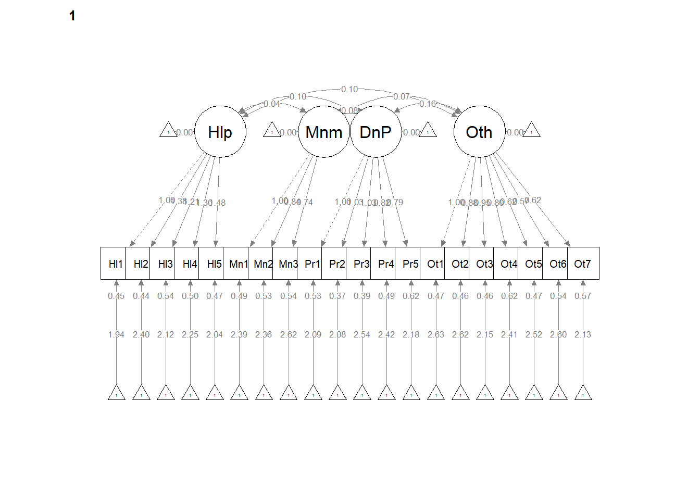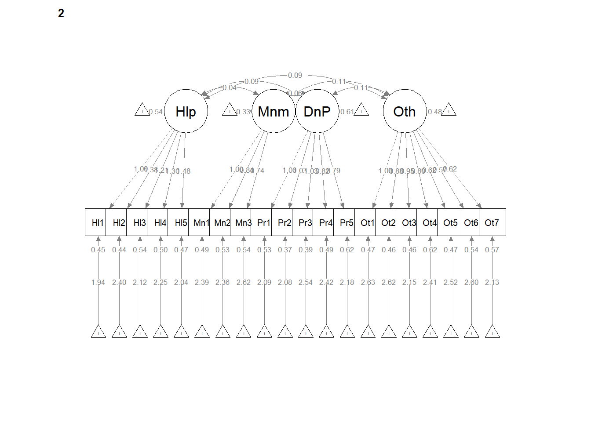
# If R stalls, open the console. I received the instruction, 'Hit
# <Return> to see next plot:' Then it ran!12.8.1 Interpreting the Output
Note that although the “Std.all” values differ from each other, the “Estimates” (factor loadings) are identical across Mild and Severe groups. Each also has a “label” (e.g., .p2., .p3.) which indicates that they have been constrained to be equal. The “Std.all” differ between degree of disability severity due to the difference in standard deviations of the indicators.
| Criteria | Our Results | Criteria met? |
|---|---|---|
| Mild: factor loadings significant, strong, proper valence | Help: .44 to .57; Min: .44 to .52; Pers: .41 to .60; Oth: .36 to .58 | |
| Severe: factor loadings significant, strong, proper valence | Help: .46 to .59; Min: .38 to .51 Pers: .43 to .62; Oth: .37 to .60 | |
| Yes | ||
| Non-significant chi-square | \(\chi ^{2}(380) = 439.69 p < 0.019\) | No |
| \(CFI\geq .95\) or \(CFI\geq .90\) | CFI = 0.971 | No |
| \(RMSEA\leq .05\) (but definitely < .10) | RMSEA = 0.019, CI90%(0.009 to 0.027) | Yes(ish) |
| \(SRMR\leq .08\) (but definitely < .10) | SRMR = 0.046 | Yes(ish) |
| Combination rule: \(CFI \geq .95\) and \(SRMR \leq .08\) | CFI = 0.971, SRMR = 0.046 | No |
12.8.2 Partial Write-up
Strict invariance model. In the strict invariance model, configuration, factor loadings, indicator means/intercepts, and residuals were constrained to be the same for each group. Fit indices were less than ideal: \(\chi ^{2}(380) = 439.69 p < 0.019\) , CFI = 0.971, SRMR = 0.046, RMSEA = 0.019, (90%CI = 0.009 to 0.027). Although the non-significant chi-square difference test and the change CFI test indicate that the strong and strict invariance models are not statistically significant from each other (\(\chi_{D}^{2}(20) = 26.946, p = 0.137\); \(\Delta CFI = 0.004\)) our earlier data indicated that we cannot claim invariance beyond the weak model.
[1] 0.00412.9 Partial Measurement Invariance
Partial measurement invariance can be seen as an intermediate state of invariance and whatever stage (beyond configural; weak, strong, strict) that the criteria for invariance is not met. For example:
- if the model failed at weak invariance, tests of partial measurement invariance could determine which factor loadings are (and are not) invariant across groups;
- if the model failed at strong invariance, tests of partial measurement invariance could determine which intercepts/means are (and are not) invariant across groups;
- (this one is aspirational) if the model failed at strict invariance, tests of partial measurement invariance could determine which residuals are (and are not) invariant across groups.
Using some of the investigative tools in lavaan and the associated packages, researchers can identify which elements are noninvariant. They can free the constraints until the fit statistics are acceptable and the the Chi-square difference and \(\Delta CFI\) tests are no longer significant.
Conover et al. (2017) reported that the AMS was invariant at configural and weak invariance (i.e., constraining factor loadings to be equal). At the level of strong invariance (i.e., adding constraints to the intercepts), results, the majority of fit indices remained acceptable (CFI = .90, RMSEA = .06, SRMR = .08). However the chi-square difference and CFI change tests were statistically significant: \(\chi_{D}^{2}(20) = 78.83, p < .01\); \(\Delta CFI = -.010\). The Conover et al. article did not report further investigation regarding partial measurement invariance.
12.10 APA Style Write-up of the Results
As in the Conover et al. (2017) article, the write-up of invariance testing would likely be part of a multi-stage evaluation. Therefore, this section would be preceded by a variety of steps in a psychometric evaluation. Here is an example of how I might write this up.
12.10.1 Measurement Invariance Across Disability Severity
To test if the factor structures of the AMS were stable across disability severity, we used measurement invariance analyses. First, we constructed CFA models with the lavaan (v. 0.6-17) package in R and created two groups representing mild and severe. Within lavaan we successivly constrained parameters representing the configural, weak (loadings), strong (intercepts), and strict (residuals) structures (Hirschfeld & von Brachel, Ruth, 2014; Kline, 2016). A poor fit in any of these models suggests that the aspect being constrained does not operate consistently for the different groups. The degree of invariance was determined jointly when \(\chi_{D}^2, p > .05\); and a \(\Delta CFI < .01\).
The configural model constrains only the relative configuration of variables in the model to be the same in both groups. In other words, no factor loadings or indicator means are constrained to be the same across groups, but the organization of indicators is the same for both groups. Next, in weak factorial invariance, the configuration of variables and all factor loadings are constrained to be the same for each group. Poor fit here suggests that the factor loadings vary in size between the two groups. In strong factorial invariance, both the configuration, factor loadings, and the indicator means are constrained to be the same for each group. A reduction in fit here, but not in the previous steps, suggests that indicators have different means in both groups, which might be expected when comparing two groups of people, such as in a t-test. Therefore, poor fit in only this model does not necessarily indicate the factor structure operates differently for different groups. Finally, strict factorial invariance requires strong invariance and equality in error variances and covariances across groups. This means that the indicators measure the same factors in each group with the same degree of precision.
We selected fit criteria for their capacity to assess different aspects of the statistical analysis. As is common among SEM researchers, we reported the chi-square goodness of fit (\(\chi^2\)). This evaluates the discrepancy between the unrestricted sample matrix and the restricted covariance matrix. Although the associated \(p\) value indicates adequate fit when the value is non-significant, it is widely recognized that large sample size can result in a statistically significant \(p\) value (Byrne, 2016b). The comparative fit index (CFI) is an incremental index, comparing the hypothesized model with the baseline model, and should be at least .90 and perhaps higher than .95 (Hu & Bentler, 1999). The root mean square error of approximation (RMSEA) takes into account the error of approximation in the population and expresses it per degree of freedom. As such, the fit indicator considers the complexity of the model. Ideal values are equal to or less than .05, values less than .08 represent reasonable fit, and values between .08 and .10 represent mediocre fit. The standardized root mean residual (SRMR) is a standardized measure of the mean absolute covariance residual – the overall difference between the observed and predicted correlations. Values greater than .10 may indicate poor fit and inspection of residuals is then advised. Researchers have advised caution when using these criteria as strict cutoffs, and other factors such as sample size and model complexity should be considered (Kline, 2016).
AMS items each were loaded on their respective correlated factors. The configural model, which constrained only the relative configuration of variables in the model to be the same in both groups had adequate fit to the data: \(\chi ^{2}(328) = 327.57, p = 0.496\), CFI = 1.000, SRMR = 0.034, RMSEA = 0.000, 90%CI(0.000, 0.018). The weak invariance model constrained the configuration of variables and all factor loadings to be constant across groups. Fit indices were comparable to the configural model: \(\chi ^{2}(344) = 353.00, p = 0.357\), CFI = 0.996, SRMR = 0.039, RMSEA = 0.008, 90%CI(0.000, 0.020. Invariance of the factor loadings was supported by the non-significant difference tests that assessed model similarity: \(\chi_{D}^{2}(16) = 25.42, p = 0.063\); \(\Delta CFI = 0.004\). In the strong invariance model, configuration, factor loadings, and indicator means/intercepts were constrained to be the same for each group. Fit indices were less than ideal: \(\chi ^{2}(360) = 412.75 p = 0.029\), CFI = 0.975, SRMR = 0.045 , RMSEA =0.019, CI90%(0.007 to 0.027). The difference tests that evaluated model similarity suggested there was factorial noninvariance: (\(\chi_{D}^{2}(16) = 59.754, p = 0.01\); \(\Delta CFI = 0.021\). Given that the \(\chi_{D}^{2}\) test is statistically significant and the \(\Delta CFI 0.01\) we cannot claim strong invariance and we therefore do not test stricter models. Because we found noninvariance at the strong level, we did not attempt to model strict invariance.
Overall, this analysis suggests that the factor structure of the AMS was stable for mild/moderate and severe/very severe levels of disability. Figure 1 provides an illustration of the factor structure. Tables 1 and 2 provide fit indices for each of the factor structures and a summary of the measurement invariance tests.
12.11 Practice Problems
In each of these lessons I provide suggestions for practice that allow you to select one or more problems that are graded in difficulty The least complex is to change the random seed and rework the problem demonstrated in the lesson. The results should map onto the ones obtained in the lecture.
The second option would be to adapt one of the codes in the simluations chapter to create two groups for which invariance testing would be appropriate for that measure.
As a third option, you are welcome to use data to which you have access and is suitable for invariance testing. In either case, you will be expected to:
- Specify, interpret, and write up preliminary results for CFA models that examine
- entire sample (making no distinction between groups)
- configural invariance
- weak invariance
- strong invariance
- strict invariance
- Create an APA style results section with appropriate table(s) and figure(s)
- Talk about it with someone
12.11.1 Problem #1: Play around with this simulation.
Copy the script for the simulation and then change the number in “set.seed(211023)” from 211023 to something else. Your results should parallel those obtained in the lecture, making it easier for you to check your work as you go.
12.11.2 Problem #2: Adapt one of the simulated data sets.
The Simulations includes simulated data from many of the research vignettes used in this volume. Using guidance provided in this lesson, adapt one of those simulations to include at least two groups for which invariance testing would be appropriate.
12.11.3 Problem #3: Try something entirely new.
Using data for which you have permission and access (e.g., IRB approved data you have collected or from your lab; data you simulate from a published article; data from an open science repository) complete the multi-group invariance testing process.
12.11.4 Grading Rubric
| Assignment Component | Points Possible | Points Earned |
|---|---|---|
| 1. Check and, if needed, format data | 5 | _____ |
| 2. Specify, evaluate, and interpret the CFA for the entire sample (making no distinction between groups). Write up the preliminary results. | 5 | _____ |
| 3. Specify, evaluate, and interpret the CFA for configural invariance. Write up the preliminary results. | 5 | _____ |
| 4. Specify, evaluate, and interpret the CFA for weak invariance. Conduct the analysis to compare fit the weak and configural models. Write up the preliminary results. | 5 | _____ |
| 5. Specify, evaluate, and interpret the CFA for strong invariance. Conduct the analysis to compare fit the strong and weak models. Write up the preliminary results. | 5 | _____ |
| 6. Specify, evaluate, and interpret the CFA for strict invariance. Conduct the analysis to compare fit the strict and strong models. Write up the preliminary results. | 5 | _____ |
| 7. Create an APA style results section. Do not report any invariance tests past the one that failed. Include a table(s) and figure(s) | 10 | _____ |
| 8. Explanation to grader | 5 | _____ |
| Totals | 45 | _____ |
12.12 Homeworked Example
For more information about the data used in this homeworked example, please refer to the description and codebook located at the end of the introduction in first volume of ReCentering Psych Stats.
As a brief review, this data is part of an IRB-approved study, with consent to use in teaching demonstrations and to be made available to the general public via the open science framework. Hence, it is appropriate to use in this context. You will notice there are student- and teacher- IDs. These numbers are not actual student and teacher IDs, rather they were further re-identified so that they could not be connected to actual people.
Because this is an actual dataset, if you wish to work the problem along with me, you will need to download the ReC.rds data file from the Worked_Examples folder in the ReC_Psychometrics project on the GitHub.
The course evaluation items can be divided into three subscales:
- Valued by the student includes the items: ValObjectives, IncrUnderstanding, IncrInterest
- Traditional pedagogy includes the items: ClearResponsibilities, EffectiveAnswers, Feedback, ClearOrganization, ClearPresentation
- Socially responsive pedagogy includes the items: InclusvClassrm, EquitableEval, MultPerspectives, DEIintegration
In this Homeworked Example I will assess for invariance of the a first-level, correlated factors model for the course evaluation data across students in the Clinical Psychology (CPY) and Industrial-Organizational Psychology (ORG) doctoral programs, asking “Is the structure of the course evaluation item data invariant across CPY and IOP?”
Check and, if needed, format data
The invariance testing will be easiest if I trim the dataset to the items and the grouping variable (i.e., Dept).
library(tidyverse)
items <- big %>%
dplyr::select(Dept, ValObjectives, IncrUnderstanding, IncrInterest,
ClearResponsibilities, EffectiveAnswers, Feedback, ClearOrganization,
ClearPresentation, MultPerspectives, InclusvClassrm, DEIintegration,
EquitableEval)Let’s check the structure of the data. The items should be numerical or integer; the Dept variable must be a factor.
Classes 'data.table' and 'data.frame': 310 obs. of 13 variables:
$ Dept : chr "CPY" "CPY" "CPY" "CPY" ...
$ ValObjectives : int 5 5 4 4 5 5 5 5 4 5 ...
$ IncrUnderstanding : int 2 3 4 3 4 4 5 2 4 5 ...
$ IncrInterest : int 5 3 4 2 4 3 5 3 2 5 ...
$ ClearResponsibilities: int 5 5 4 4 5 4 5 4 4 5 ...
$ EffectiveAnswers : int 5 3 5 3 5 3 4 3 2 3 ...
$ Feedback : int 5 3 4 2 5 NA 5 4 4 5 ...
$ ClearOrganization : int 3 4 3 4 4 4 5 4 4 5 ...
$ ClearPresentation : int 4 4 4 2 5 3 4 4 4 5 ...
$ MultPerspectives : int 5 5 4 5 5 4 5 5 5 5 ...
$ InclusvClassrm : int 5 5 5 5 5 4 5 5 4 5 ...
$ DEIintegration : int 5 5 5 5 5 4 5 5 5 5 ...
$ EquitableEval : int 5 5 3 5 5 3 5 5 3 5 ...
- attr(*, ".internal.selfref")=<externalptr> Let’s change the Dept variable to be a factor.
Specify, evaluate, and interpret the CFA for the entire sample (making no distinction between groups). Write up the preliminary results.
corrF <- "TradPed =~ ClearResponsibilities + EffectiveAnswers + Feedback + ClearOrganization + ClearPresentation
Valued =~ ValObjectives + IncrUnderstanding + IncrInterest
SCRPed =~ MultPerspectives + InclusvClassrm + DEIintegration + EquitableEval
TradPed~~Valued
TradPed~~SCRPed
Valued~~SCRPed
"set.seed(240505)
corrF_fit <- lavaan::cfa(corrF, data = items)
lavaan::summary(corrF_fit, fit.measures = TRUE, standardized = TRUE, rsquare = TRUE)lavaan 0.6.17 ended normally after 42 iterations
Estimator ML
Optimization method NLMINB
Number of model parameters 27
Used Total
Number of observations 267 310
Model Test User Model:
Test statistic 224.795
Degrees of freedom 51
P-value (Chi-square) 0.000
Model Test Baseline Model:
Test statistic 1940.157
Degrees of freedom 66
P-value 0.000
User Model versus Baseline Model:
Comparative Fit Index (CFI) 0.907
Tucker-Lewis Index (TLI) 0.880
Loglikelihood and Information Criteria:
Loglikelihood user model (H0) -2977.975
Loglikelihood unrestricted model (H1) -2865.578
Akaike (AIC) 6009.951
Bayesian (BIC) 6106.807
Sample-size adjusted Bayesian (SABIC) 6021.201
Root Mean Square Error of Approximation:
RMSEA 0.113
90 Percent confidence interval - lower 0.098
90 Percent confidence interval - upper 0.128
P-value H_0: RMSEA <= 0.050 0.000
P-value H_0: RMSEA >= 0.080 1.000
Standardized Root Mean Square Residual:
SRMR 0.061
Parameter Estimates:
Standard errors Standard
Information Expected
Information saturated (h1) model Structured
Latent Variables:
Estimate Std.Err z-value P(>|z|) Std.lv Std.all
TradPed =~
ClearRspnsblts 1.000 0.652 0.826
EffectivAnswrs 1.015 0.065 15.606 0.000 0.662 0.815
Feedback 1.010 0.075 13.481 0.000 0.659 0.735
ClearOrganiztn 1.295 0.086 15.106 0.000 0.845 0.797
ClearPresenttn 1.204 0.072 16.680 0.000 0.785 0.853
Valued =~
ValObjectives 1.000 0.334 0.557
IncrUndrstndng 1.942 0.223 8.717 0.000 0.649 0.786
IncrInterest 2.438 0.273 8.932 0.000 0.815 0.844
SCRPed =~
MultPerspectvs 1.000 0.713 0.846
InclusvClassrm 0.622 0.053 11.672 0.000 0.444 0.682
DEIintegration 0.589 0.063 9.365 0.000 0.420 0.567
EquitableEval 0.642 0.052 12.410 0.000 0.458 0.717
Covariances:
Estimate Std.Err z-value P(>|z|) Std.lv Std.all
TradPed ~~
Valued 0.171 0.026 6.640 0.000 0.785 0.785
SCRPed 0.391 0.045 8.677 0.000 0.841 0.841
Valued ~~
SCRPed 0.164 0.026 6.254 0.000 0.688 0.688
Variances:
Estimate Std.Err z-value P(>|z|) Std.lv Std.all
.ClearRspnsblts 0.199 0.021 9.456 0.000 0.199 0.319
.EffectivAnswrs 0.222 0.023 9.618 0.000 0.222 0.336
.Feedback 0.371 0.036 10.415 0.000 0.371 0.460
.ClearOrganiztn 0.410 0.042 9.855 0.000 0.410 0.365
.ClearPresenttn 0.232 0.026 8.939 0.000 0.232 0.273
.ValObjectives 0.248 0.023 10.650 0.000 0.248 0.690
.IncrUndrstndng 0.260 0.032 8.041 0.000 0.260 0.382
.IncrInterest 0.268 0.043 6.308 0.000 0.268 0.288
.MultPerspectvs 0.203 0.029 7.052 0.000 0.203 0.285
.InclusvClassrm 0.226 0.023 10.028 0.000 0.226 0.534
.DEIintegration 0.371 0.035 10.734 0.000 0.371 0.678
.EquitableEval 0.198 0.020 9.685 0.000 0.198 0.486
TradPed 0.426 0.053 8.085 0.000 1.000 1.000
Valued 0.112 0.024 4.595 0.000 1.000 1.000
SCRPed 0.509 0.063 8.039 0.000 1.000 1.000
R-Square:
Estimate
ClearRspnsblts 0.681
EffectivAnswrs 0.664
Feedback 0.540
ClearOrganiztn 0.635
ClearPresenttn 0.727
ValObjectives 0.310
IncrUndrstndng 0.618
IncrInterest 0.712
MultPerspectvs 0.715
InclusvClassrm 0.466
DEIintegration 0.322
EquitableEval 0.514Among my first steps are also to write the code to export the results. The tidySEM package has useful functions to export the fit statistics, parameter estimates, and correlations among the latent variables (i.e., factors).
corrF_FitStats <- tidySEM::table_fit(corrF_fit)
corrF_paramEsts <- tidySEM::table_results(corrF_fit, digits = 3, columns = NULL)
corrF_Corrs <- tidySEM::table_cors(corrF_fit, digits = 3)
# to see each of the tables, remove the hashtag corrF_FitStats
# bifacF_paramEsts bifacFCorrsNext, I export them.
write.csv(corrF_FitStats, file = "corrF_FitStats.csv")
write.csv(corrF_paramEsts, file = "corrF_paramEsts.csv")
write.csv(corrF_Corrs, file = "corrF_Corrs")Troubleshooting tip: If, while working with this function you get the error: “Error in file(file, ifelse(append,”a”, “w”)) : cannot open the connection”, it’s because the .csv file that received your table is still open. R is just trying to write over it. A similar error happens when knitting.

We evaluated a single-order, multidimensional model where each of the 12 items loaded onto one of three correlated factors. Standardized pattern coefficients ranged between 0.74 and 0.85 on the TradPed factor, between 0.56 and 0.84 on the Valued factor, and between 0.57 and 0.85 on the SCRPed factor. The Chi-square index was statistically significant \((\chi^2(51) = 224.795, p < 0.001\) indicating some degree of misfit. The CFI value of 0.91 exceeded the bare minimum recommendation of 0.90. The RMSEA = 0.113 (90% CI [0.098, 0.128]) was higher than recommended value of 0.10. The SRMR value of 0.061 remained below the warning criteria of 0.10. The AIC and BIC values were 6009.95 and 6106.81, respectively.
At the outset, let me acknowledge that starting the invariance testing with fit indices that are on the margins of acceptability suggests that we may not get very far.
Specify, evaluate, and interpret the CFA for configural invariance. Write up the preliminary results.
The only addition to the prior code is to add the grouping variable.
configural <- lavaan::cfa(corrF, data = items, group = "Dept")
lavaan::summary(configural, fit.measures = TRUE, standardized = TRUE)lavaan 0.6.17 ended normally after 71 iterations
Estimator ML
Optimization method NLMINB
Number of model parameters 78
Number of observations per group: Used Total
CPY 202 232
ORG 65 78
Model Test User Model:
Test statistic 339.428
Degrees of freedom 102
P-value (Chi-square) 0.000
Test statistic for each group:
CPY 202.821
ORG 136.608
Model Test Baseline Model:
Test statistic 2156.987
Degrees of freedom 132
P-value 0.000
User Model versus Baseline Model:
Comparative Fit Index (CFI) 0.883
Tucker-Lewis Index (TLI) 0.848
Loglikelihood and Information Criteria:
Loglikelihood user model (H0) -2897.967
Loglikelihood unrestricted model (H1) -2728.252
Akaike (AIC) 5951.933
Bayesian (BIC) 6231.739
Sample-size adjusted Bayesian (SABIC) 5984.433
Root Mean Square Error of Approximation:
RMSEA 0.132
90 Percent confidence interval - lower 0.117
90 Percent confidence interval - upper 0.148
P-value H_0: RMSEA <= 0.050 0.000
P-value H_0: RMSEA >= 0.080 1.000
Standardized Root Mean Square Residual:
SRMR 0.073
Parameter Estimates:
Standard errors Standard
Information Expected
Information saturated (h1) model Structured
Group 1 [CPY]:
Latent Variables:
Estimate Std.Err z-value P(>|z|) Std.lv Std.all
TradPed =~
ClearRspnsblts 1.000 0.580 0.764
EffectivAnswrs 1.017 0.087 11.659 0.000 0.590 0.782
Feedback 1.048 0.098 10.661 0.000 0.608 0.724
ClearOrganiztn 1.393 0.121 11.540 0.000 0.808 0.775
ClearPresenttn 1.380 0.105 13.134 0.000 0.801 0.865
Valued =~
ValObjectives 1.000 0.360 0.603
IncrUndrstndng 1.960 0.226 8.668 0.000 0.705 0.820
IncrInterest 2.251 0.259 8.688 0.000 0.810 0.823
SCRPed =~
MultPerspectvs 1.000 0.681 0.875
InclusvClassrm 0.830 0.061 13.701 0.000 0.566 0.812
DEIintegration 0.736 0.072 10.187 0.000 0.501 0.656
EquitableEval 0.590 0.056 10.501 0.000 0.402 0.671
Covariances:
Estimate Std.Err z-value P(>|z|) Std.lv Std.all
TradPed ~~
Valued 0.185 0.030 6.227 0.000 0.885 0.885
SCRPed 0.329 0.045 7.373 0.000 0.833 0.833
Valued ~~
SCRPed 0.160 0.028 5.663 0.000 0.653 0.653
Intercepts:
Estimate Std.Err z-value P(>|z|) Std.lv Std.all
.ClearRspnsblts 4.510 0.053 84.410 0.000 4.510 5.939
.EffectivAnswrs 4.416 0.053 83.154 0.000 4.416 5.851
.Feedback 4.327 0.059 73.232 0.000 4.327 5.153
.ClearOrganiztn 4.109 0.073 56.009 0.000 4.109 3.941
.ClearPresenttn 4.287 0.065 65.775 0.000 4.287 4.628
.ValObjectives 4.554 0.042 108.498 0.000 4.554 7.634
.IncrUndrstndng 4.287 0.060 70.863 0.000 4.287 4.986
.IncrInterest 3.941 0.069 56.961 0.000 3.941 4.008
.MultPerspectvs 4.490 0.055 81.955 0.000 4.490 5.766
.InclusvClassrm 4.649 0.049 94.832 0.000 4.649 6.672
.DEIintegration 4.550 0.054 84.599 0.000 4.550 5.952
.EquitableEval 4.604 0.042 109.361 0.000 4.604 7.695
Variances:
Estimate Std.Err z-value P(>|z|) Std.lv Std.all
.ClearRspnsblts 0.240 0.027 8.916 0.000 0.240 0.416
.EffectivAnswrs 0.221 0.025 8.775 0.000 0.221 0.388
.Feedback 0.335 0.037 9.163 0.000 0.335 0.475
.ClearOrganiztn 0.434 0.049 8.831 0.000 0.434 0.399
.ClearPresenttn 0.217 0.028 7.607 0.000 0.217 0.252
.ValObjectives 0.227 0.025 9.223 0.000 0.227 0.636
.IncrUndrstndng 0.242 0.035 6.920 0.000 0.242 0.328
.IncrInterest 0.311 0.046 6.832 0.000 0.311 0.322
.MultPerspectvs 0.143 0.024 5.963 0.000 0.143 0.235
.InclusvClassrm 0.166 0.022 7.588 0.000 0.166 0.341
.DEIintegration 0.333 0.036 9.125 0.000 0.333 0.570
.EquitableEval 0.197 0.022 9.045 0.000 0.197 0.550
TradPed 0.337 0.054 6.279 0.000 1.000 1.000
Valued 0.129 0.029 4.462 0.000 1.000 1.000
SCRPed 0.464 0.062 7.515 0.000 1.000 1.000
Group 2 [ORG]:
Latent Variables:
Estimate Std.Err z-value P(>|z|) Std.lv Std.all
TradPed =~
ClearRspnsblts 1.000 0.810 0.924
EffectivAnswrs 1.101 0.086 12.866 0.000 0.892 0.920
Feedback 0.875 0.129 6.808 0.000 0.709 0.682
ClearOrganiztn 1.096 0.118 9.325 0.000 0.888 0.810
ClearPresenttn 1.015 0.081 12.502 0.000 0.822 0.911
Valued =~
ValObjectives 1.000 0.224 0.366
IncrUndrstndng 2.193 0.824 2.661 0.008 0.490 0.693
IncrInterest 3.450 1.262 2.735 0.006 0.771 0.865
SCRPed =~
MultPerspectvs 1.000 0.901 0.895
InclusvClassrm 0.146 0.068 2.155 0.031 0.131 0.278
DEIintegration 0.242 0.093 2.596 0.009 0.218 0.331
EquitableEval 0.569 0.095 6.002 0.000 0.513 0.687
Covariances:
Estimate Std.Err z-value P(>|z|) Std.lv Std.all
TradPed ~~
Valued 0.106 0.047 2.263 0.024 0.586 0.586
SCRPed 0.577 0.128 4.497 0.000 0.791 0.791
Valued ~~
SCRPed 0.161 0.067 2.415 0.016 0.798 0.798
Intercepts:
Estimate Std.Err z-value P(>|z|) Std.lv Std.all
.ClearRspnsblts 4.431 0.109 40.755 0.000 4.431 5.055
.EffectivAnswrs 4.369 0.120 36.321 0.000 4.369 4.505
.Feedback 4.108 0.129 31.857 0.000 4.108 3.951
.ClearOrganiztn 3.892 0.136 28.602 0.000 3.892 3.548
.ClearPresenttn 4.215 0.112 37.642 0.000 4.215 4.669
.ValObjectives 4.523 0.076 59.745 0.000 4.523 7.410
.IncrUndrstndng 4.338 0.088 49.425 0.000 4.338 6.130
.IncrInterest 4.138 0.111 37.392 0.000 4.138 4.638
.MultPerspectvs 4.308 0.125 34.506 0.000 4.308 4.280
.InclusvClassrm 4.738 0.059 80.735 0.000 4.738 10.014
.DEIintegration 4.523 0.082 55.348 0.000 4.523 6.865
.EquitableEval 4.523 0.093 48.854 0.000 4.523 6.060
Variances:
Estimate Std.Err z-value P(>|z|) Std.lv Std.all
.ClearRspnsblts 0.112 0.028 3.960 0.000 0.112 0.146
.EffectivAnswrs 0.145 0.036 4.070 0.000 0.145 0.154
.Feedback 0.578 0.106 5.453 0.000 0.578 0.535
.ClearOrganiztn 0.415 0.080 5.153 0.000 0.415 0.345
.ClearPresenttn 0.139 0.033 4.260 0.000 0.139 0.170
.ValObjectives 0.323 0.058 5.527 0.000 0.323 0.866
.IncrUndrstndng 0.260 0.058 4.492 0.000 0.260 0.520
.IncrInterest 0.201 0.092 2.182 0.029 0.201 0.252
.MultPerspectvs 0.202 0.088 2.294 0.022 0.202 0.199
.InclusvClassrm 0.207 0.037 5.640 0.000 0.207 0.923
.DEIintegration 0.386 0.069 5.611 0.000 0.386 0.890
.EquitableEval 0.294 0.059 5.009 0.000 0.294 0.528
TradPed 0.656 0.135 4.867 0.000 1.000 1.000
Valued 0.050 0.036 1.400 0.161 1.000 1.000
SCRPed 0.811 0.192 4.229 0.000 1.000 1.000Among my first steps are also to write the code to export the results. The tidySEM package has useful functions to export the fit statistics, parameter estimates, and correlations among the latent variables (i.e., factors).
configural_FitStats <- tidySEM::table_fit(configural)
configural_paramEsts <- tidySEM::table_results(configural, digits = 3,
columns = NULL)
configural_Corrs <- tidySEM::table_cors(configural, digits = 3)
# to see each of the tables, remove the hashtag configural_FitStats
# configural_paramEsts configural_CorrsNext, I export them.
write.csv(configural_FitStats, file = "configural_FitStats.csv")
write.csv(configural_paramEsts, file = "configural_paramEsts.csv")
write.csv(configural_Corrs, file = "configural_Corrs.csv")We can also plot our work
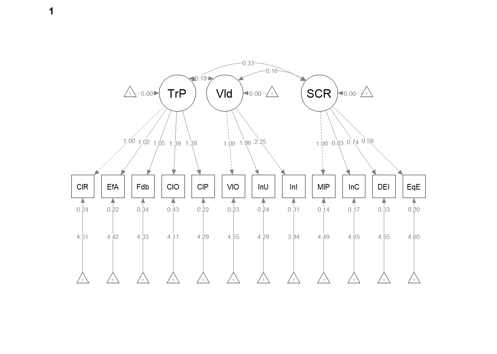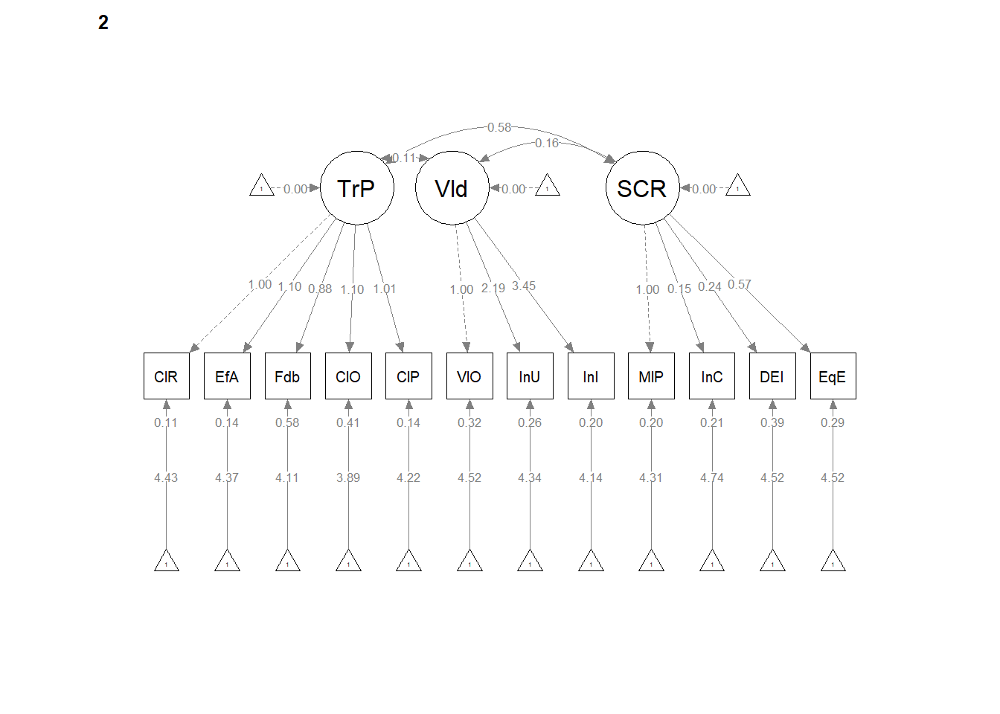
# If the procedure stalls open the Consult and follow the
# instructions to Hit Return to see the plotConfigural Model. The configural model, which constrained only the relative configuration of variables in the model to be the same in both groups had less than adequate fit to the data: \(\chi^2 (102)=339.43, p < 0.001, CFI = 0.883, SRMR = 0.073, RMSEA = 0.132, 90%CI(0.117, 0.148)\). For CPY, standardized pattern coefficients ranged between 0.72 and 0.87 on the TradPed factor, between 0.60 and 0.82 on the Valued factor, and between 0.66 and 0.88 on the SCRPed factor. For ORG, standardized pattern coefficients ranged between 0.58 and 0.92 for the TradPed factor, between 0.37 and 0.87 on the Valued factor, and between 0.28 and 0.90 on the SCRPed factor.
At this point we notice that the factor loadings for CPY are consistently above 0.60. In contrast, some factor loadings dip as low as 0.28. Excepting the SRMR (which is below the 0.08) the remaining fit indices would suggest that we cannot claim configural invariance between these two groups. Because this is a demonstration, I will continue with all of the steps.
Specify, evaluate, and interpret the CFA for the entire sample (making no distinction between groups). Write up the preliminary results. {-} Specify, evaluate, and interpret the CFA for weak invariance. Conduct the analysis to compare fit the weak and configural models. Write up the preliminary results.
To the code we wrote for testing configural invariance, we add the group.equal = “loadings command.
weak <- lavaan::cfa(corrF, data = items, group = "Dept", group.equal = "loadings")
lavaan::summary(weak, fit.measures = TRUE, standardized = TRUE)lavaan 0.6.17 ended normally after 55 iterations
Estimator ML
Optimization method NLMINB
Number of model parameters 78
Number of equality constraints 9
Number of observations per group: Used Total
CPY 202 232
ORG 65 78
Model Test User Model:
Test statistic 400.290
Degrees of freedom 111
P-value (Chi-square) 0.000
Test statistic for each group:
CPY 213.288
ORG 187.001
Model Test Baseline Model:
Test statistic 2156.987
Degrees of freedom 132
P-value 0.000
User Model versus Baseline Model:
Comparative Fit Index (CFI) 0.857
Tucker-Lewis Index (TLI) 0.830
Loglikelihood and Information Criteria:
Loglikelihood user model (H0) -2928.397
Loglikelihood unrestricted model (H1) -2728.252
Akaike (AIC) 5994.795
Bayesian (BIC) 6242.315
Sample-size adjusted Bayesian (SABIC) 6023.544
Root Mean Square Error of Approximation:
RMSEA 0.140
90 Percent confidence interval - lower 0.125
90 Percent confidence interval - upper 0.155
P-value H_0: RMSEA <= 0.050 0.000
P-value H_0: RMSEA >= 0.080 1.000
Standardized Root Mean Square Residual:
SRMR 0.101
Parameter Estimates:
Standard errors Standard
Information Expected
Information saturated (h1) model Structured
Group 1 [CPY]:
Latent Variables:
Estimate Std.Err z-value P(>|z|) Std.lv Std.all
TradPed =~
ClrRspn 1.000 0.619 0.788
EffctvA (.p2.) 1.041 0.062 16.874 0.000 0.644 0.811
Feedbck (.p3.) 0.977 0.074 13.277 0.000 0.605 0.726
ClrOrgn (.p4.) 1.260 0.083 15.218 0.000 0.780 0.762
ClrPrsn (.p5.) 1.190 0.066 17.996 0.000 0.737 0.834
Valued =~
VlObjct 1.000 0.355 0.598
IncrUnd (.p7.) 1.952 0.214 9.121 0.000 0.693 0.812
IncrInt (.p8.) 2.330 0.253 9.226 0.000 0.827 0.834
SCRPed =~
MltPrsp 1.000 0.696 0.881
InclsvC (.10.) 0.743 0.055 13.417 0.000 0.517 0.773
DEIntgr (.11.) 0.693 0.066 10.435 0.000 0.483 0.638
EqtblEv (.12.) 0.626 0.053 11.750 0.000 0.436 0.707
Covariances:
Estimate Std.Err z-value P(>|z|) Std.lv Std.all
TradPed ~~
Valued 0.192 0.029 6.542 0.000 0.875 0.875
SCRPed 0.362 0.046 7.837 0.000 0.840 0.840
Valued ~~
SCRPed 0.163 0.028 5.783 0.000 0.658 0.658
Intercepts:
Estimate Std.Err z-value P(>|z|) Std.lv Std.all
.ClearRspnsblts 4.510 0.055 81.633 0.000 4.510 5.744
.EffectivAnswrs 4.416 0.056 78.997 0.000 4.416 5.558
.Feedback 4.327 0.059 73.822 0.000 4.327 5.194
.ClearOrganiztn 4.109 0.072 57.069 0.000 4.109 4.015
.ClearPresenttn 4.287 0.062 69.002 0.000 4.287 4.855
.ValObjectives 4.554 0.042 108.931 0.000 4.554 7.664
.IncrUndrstndng 4.287 0.060 71.430 0.000 4.287 5.026
.IncrInterest 3.941 0.070 56.440 0.000 3.941 3.971
.MultPerspectvs 4.490 0.056 80.795 0.000 4.490 5.685
.InclusvClassrm 4.649 0.047 98.789 0.000 4.649 6.951
.DEIintegration 4.550 0.053 85.411 0.000 4.550 6.009
.EquitableEval 4.604 0.043 106.079 0.000 4.604 7.464
Variances:
Estimate Std.Err z-value P(>|z|) Std.lv Std.all
.ClearRspnsblts 0.233 0.027 8.729 0.000 0.233 0.379
.EffectivAnswrs 0.216 0.025 8.490 0.000 0.216 0.342
.Feedback 0.328 0.036 9.146 0.000 0.328 0.473
.ClearOrganiztn 0.439 0.049 8.932 0.000 0.439 0.419
.ClearPresenttn 0.237 0.029 8.188 0.000 0.237 0.304
.ValObjectives 0.227 0.025 9.243 0.000 0.227 0.643
.IncrUndrstndng 0.247 0.035 7.081 0.000 0.247 0.340
.IncrInterest 0.300 0.046 6.546 0.000 0.300 0.305
.MultPerspectvs 0.139 0.024 5.692 0.000 0.139 0.223
.InclusvClassrm 0.180 0.022 8.183 0.000 0.180 0.402
.DEIintegration 0.340 0.037 9.218 0.000 0.340 0.594
.EquitableEval 0.190 0.022 8.816 0.000 0.190 0.500
TradPed 0.383 0.052 7.385 0.000 1.000 1.000
Valued 0.126 0.027 4.619 0.000 1.000 1.000
SCRPed 0.485 0.063 7.656 0.000 1.000 1.000
Group 2 [ORG]:
Latent Variables:
Estimate Std.Err z-value P(>|z|) Std.lv Std.all
TradPed =~
ClrRspn 1.000 0.760 0.907
EffctvA (.p2.) 1.041 0.062 16.874 0.000 0.792 0.889
Feedbck (.p3.) 0.977 0.074 13.277 0.000 0.743 0.695
ClrOrgn (.p4.) 1.260 0.083 15.218 0.000 0.958 0.835
ClrPrsn (.p5.) 1.190 0.066 17.996 0.000 0.905 0.926
Valued =~
VlObjct 1.000 0.285 0.460
IncrUnd (.p7.) 1.952 0.214 9.121 0.000 0.556 0.761
IncrInt (.p8.) 2.330 0.253 9.226 0.000 0.664 0.772
SCRPed =~
MltPrsp 1.000 0.534 0.594
InclsvC (.10.) 0.743 0.055 13.417 0.000 0.397 0.669
DEIntgr (.11.) 0.693 0.066 10.435 0.000 0.370 0.542
EqtblEv (.12.) 0.626 0.053 11.750 0.000 0.335 0.506
Covariances:
Estimate Std.Err z-value P(>|z|) Std.lv Std.all
TradPed ~~
Valued 0.126 0.038 3.361 0.001 0.583 0.583
SCRPed 0.272 0.073 3.722 0.000 0.669 0.669
Valued ~~
SCRPed 0.113 0.032 3.518 0.000 0.740 0.740
Intercepts:
Estimate Std.Err z-value P(>|z|) Std.lv Std.all
.ClearRspnsblts 4.431 0.104 42.624 0.000 4.431 5.287
.EffectivAnswrs 4.369 0.110 39.553 0.000 4.369 4.906
.Feedback 4.108 0.133 30.969 0.000 4.108 3.841
.ClearOrganiztn 3.892 0.142 27.348 0.000 3.892 3.392
.ClearPresenttn 4.215 0.121 34.783 0.000 4.215 4.314
.ValObjectives 4.523 0.077 58.826 0.000 4.523 7.296
.IncrUndrstndng 4.338 0.091 47.876 0.000 4.338 5.938
.IncrInterest 4.138 0.107 38.771 0.000 4.138 4.809
.MultPerspectvs 4.308 0.112 38.629 0.000 4.308 4.791
.InclusvClassrm 4.738 0.074 64.420 0.000 4.738 7.990
.DEIintegration 4.523 0.085 53.338 0.000 4.523 6.616
.EquitableEval 4.523 0.082 55.126 0.000 4.523 6.837
Variances:
Estimate Std.Err z-value P(>|z|) Std.lv Std.all
.ClearRspnsblts 0.124 0.029 4.221 0.000 0.124 0.177
.EffectivAnswrs 0.166 0.037 4.519 0.000 0.166 0.210
.Feedback 0.591 0.109 5.419 0.000 0.591 0.517
.ClearOrganiztn 0.399 0.080 4.990 0.000 0.399 0.303
.ClearPresenttn 0.136 0.036 3.796 0.000 0.136 0.142
.ValObjectives 0.303 0.056 5.377 0.000 0.303 0.789
.IncrUndrstndng 0.224 0.058 3.901 0.000 0.224 0.420
.IncrInterest 0.300 0.079 3.776 0.000 0.300 0.405
.MultPerspectvs 0.523 0.106 4.920 0.000 0.523 0.647
.InclusvClassrm 0.194 0.043 4.480 0.000 0.194 0.552
.DEIintegration 0.330 0.065 5.109 0.000 0.330 0.706
.EquitableEval 0.326 0.062 5.221 0.000 0.326 0.744
TradPed 0.578 0.115 5.041 0.000 1.000 1.000
Valued 0.081 0.024 3.328 0.001 1.000 1.000
SCRPed 0.286 0.080 3.590 0.000 1.000 1.000Let’s write and export the data into .csv files that we can view through Excel.
weak_FitStats <- tidySEM::table_fit(weak)
weak_paramEsts <- tidySEM::table_results(weak, digits = 3, columns = NULL)
weak_Corrs <- tidySEM::table_cors(weak, digits = 3)
# to see each of the tables, remove the hashtag weak_FitStats
# weak_paramEsts weak_Corrswrite.csv(weak_FitStats, file = "weak_FitStats.csv")
write.csv(weak_paramEsts, file = "weak_paramEsts.csv")
write.csv(weak_Corrs, file = "weak_Corrs.csv")with the lavaan::anova function we can formally compare the configural and weak tests.
Chi-Squared Difference Test
Df AIC BIC Chisq Chisq diff RMSEA Df diff Pr(>Chisq)
configural 102 5951.9 6231.7 339.43
weak 111 5994.8 6242.3 400.29 60.862 0.20776 9 0.0000000009145
configural
weak ***
---
Signif. codes: 0 '***' 0.001 '**' 0.01 '*' 0.05 '.' 0.1 ' ' 1The chi-square difference tests indicates that they are statistically significantly different from each other: \(\chi_{D}^2(9)=60.86,p < .001\).
Using the CFI values from the configural and weak models we hand-calculate (see below) the change CFI statistic: \(\Delta CFI = .026\). These statisticially significant differences suggest that the weak invariance model is worse.
[1] 0.026Weak invariance model. The weak invariance model constrained the configuration of variables and all factor loadings to be constant across groups. Fit suggested poor fit: \(\chi^2(111)=400.29, p < 0.001, CFI = 0.857, SRMR = 0.101, RMSEA = 0.140 (90%CI = 0.125, 0.156)\). Noninvariance of the factor loadings was supported by the significant difference tests that assessed model similarity: \(\chi_{D}^2(9)=60.86,p < .001; \Delta CFI = .026\). For CPY, standardized pattern coefficients ranged between 0.73 and 0.83 on the TradPed factor, between 0.60 and 0.83 on the Valued factor, and between 0.64 and 0.88 on the SCRPed factor. For ORG, standardized pattern coefficients ranged between 0.70 and 0.93 for the TradPed factor, between 0.46 and 0.77 on the Valued factor, and between 0.54 and 0.67 on the SCRPed factor.
As noted before, we could not claim configural invariance, so we must conclude that this model is also noninvariant.
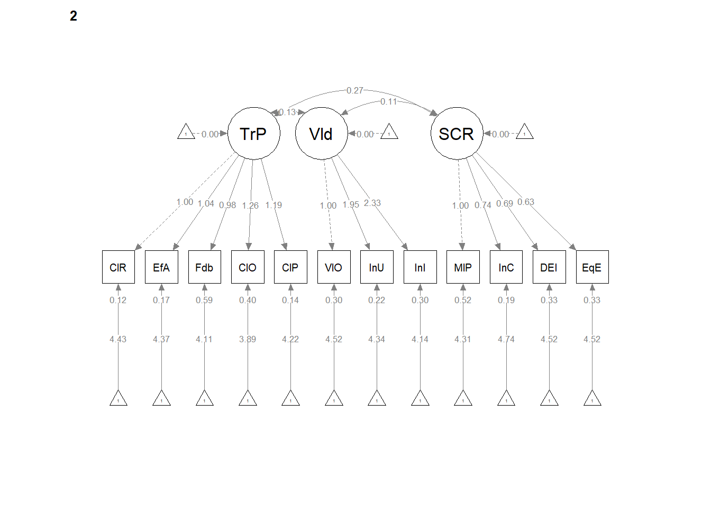
Specify, evaluate, and interpret the CFA for strong invariance. Conduct the analysis to compare fit the strong and weak models. Write up the preliminary results.
To the weak invariance code we add “intercepts” to a concatonated list in the group.equal command.
strong <- lavaan::cfa(corrF, data = items, group = "Dept", group.equal = c("loadings",
"intercepts"))
lavaan::summary(strong, fit.measures = TRUE, standardized = TRUE)lavaan 0.6.17 ended normally after 107 iterations
Estimator ML
Optimization method NLMINB
Number of model parameters 81
Number of equality constraints 21
Number of observations per group: Used Total
CPY 202 232
ORG 65 78
Model Test User Model:
Test statistic 413.226
Degrees of freedom 120
P-value (Chi-square) 0.000
Test statistic for each group:
CPY 215.909
ORG 197.317
Model Test Baseline Model:
Test statistic 2156.987
Degrees of freedom 132
P-value 0.000
User Model versus Baseline Model:
Comparative Fit Index (CFI) 0.855
Tucker-Lewis Index (TLI) 0.841
Loglikelihood and Information Criteria:
Loglikelihood user model (H0) -2934.866
Loglikelihood unrestricted model (H1) -2728.252
Akaike (AIC) 5989.731
Bayesian (BIC) 6204.966
Sample-size adjusted Bayesian (SABIC) 6014.731
Root Mean Square Error of Approximation:
RMSEA 0.135
90 Percent confidence interval - lower 0.121
90 Percent confidence interval - upper 0.150
P-value H_0: RMSEA <= 0.050 0.000
P-value H_0: RMSEA >= 0.080 1.000
Standardized Root Mean Square Residual:
SRMR 0.103
Parameter Estimates:
Standard errors Standard
Information Expected
Information saturated (h1) model Structured
Group 1 [CPY]:
Latent Variables:
Estimate Std.Err z-value P(>|z|) Std.lv Std.all
TradPed =~
ClrRspn 1.000 0.619 0.788
EffctvA (.p2.) 1.039 0.062 16.868 0.000 0.643 0.810
Feedbck (.p3.) 0.982 0.074 13.309 0.000 0.607 0.728
ClrOrgn (.p4.) 1.265 0.083 15.243 0.000 0.783 0.763
ClrPrsn (.p5.) 1.188 0.066 18.011 0.000 0.735 0.833
Valued =~
VlObjct 1.000 0.353 0.595
IncrUnd (.p7.) 1.960 0.216 9.074 0.000 0.692 0.812
IncrInt (.p8.) 2.351 0.256 9.185 0.000 0.830 0.835
SCRPed =~
MltPrsp 1.000 0.697 0.882
InclsvC (.10.) 0.740 0.055 13.350 0.000 0.515 0.771
DEIntgr (.11.) 0.690 0.066 10.401 0.000 0.481 0.636
EqtblEv (.12.) 0.626 0.053 11.757 0.000 0.436 0.707
Covariances:
Estimate Std.Err z-value P(>|z|) Std.lv Std.all
TradPed ~~
Valued 0.191 0.029 6.525 0.000 0.875 0.875
SCRPed 0.363 0.046 7.840 0.000 0.841 0.841
Valued ~~
SCRPed 0.162 0.028 5.773 0.000 0.658 0.658
Intercepts:
Estimate Std.Err z-value P(>|z|) Std.lv Std.all
.ClrRspn (.31.) 4.513 0.052 86.495 0.000 4.513 5.750
.EffctvA (.32.) 4.429 0.054 82.644 0.000 4.429 5.584
.Feedbck (.33.) 4.307 0.057 75.837 0.000 4.307 5.159
.ClrOrgn (.34.) 4.082 0.069 59.369 0.000 4.082 3.980
.ClrPrsn (.35.) 4.299 0.060 71.957 0.000 4.299 4.872
.VlObjct (.36.) 4.539 0.039 115.407 0.000 4.539 7.650
.IncrUnd (.37.) 4.276 0.058 73.163 0.000 4.276 5.017
.IncrInt (.38.) 3.961 0.069 57.724 0.000 3.961 3.983
.MltPrsp (.39.) 4.479 0.055 81.030 0.000 4.479 5.666
.InclsvC (.40.) 4.675 0.046 102.360 0.000 4.675 6.991
.DEIntgr (.41.) 4.550 0.050 91.154 0.000 4.550 6.016
.EqtblEv (.42.) 4.595 0.042 109.486 0.000 4.595 7.449
Variances:
Estimate Std.Err z-value P(>|z|) Std.lv Std.all
.ClearRspnsblts 0.233 0.027 8.728 0.000 0.233 0.379
.EffectivAnswrs 0.216 0.025 8.498 0.000 0.216 0.344
.Feedback 0.328 0.036 9.137 0.000 0.328 0.471
.ClearOrganiztn 0.439 0.049 8.924 0.000 0.439 0.418
.ClearPresenttn 0.238 0.029 8.199 0.000 0.238 0.306
.ValObjectives 0.227 0.025 9.254 0.000 0.227 0.646
.IncrUndrstndng 0.248 0.035 7.095 0.000 0.248 0.341
.IncrInterest 0.300 0.046 6.515 0.000 0.300 0.304
.MultPerspectvs 0.139 0.025 5.678 0.000 0.139 0.223
.InclusvClassrm 0.181 0.022 8.205 0.000 0.181 0.406
.DEIintegration 0.341 0.037 9.224 0.000 0.341 0.596
.EquitableEval 0.190 0.022 8.811 0.000 0.190 0.500
TradPed 0.383 0.052 7.388 0.000 1.000 1.000
Valued 0.125 0.027 4.595 0.000 1.000 1.000
SCRPed 0.486 0.063 7.655 0.000 1.000 1.000
Group 2 [ORG]:
Latent Variables:
Estimate Std.Err z-value P(>|z|) Std.lv Std.all
TradPed =~
ClrRspn 1.000 0.761 0.908
EffctvA (.p2.) 1.039 0.062 16.868 0.000 0.790 0.887
Feedbck (.p3.) 0.982 0.074 13.309 0.000 0.747 0.693
ClrOrgn (.p4.) 1.265 0.083 15.243 0.000 0.962 0.834
ClrPrsn (.p5.) 1.188 0.066 18.011 0.000 0.904 0.926
Valued =~
VlObjct 1.000 0.283 0.454
IncrUnd (.p7.) 1.960 0.216 9.074 0.000 0.554 0.758
IncrInt (.p8.) 2.351 0.256 9.185 0.000 0.664 0.769
SCRPed =~
MltPrsp 1.000 0.537 0.592
InclsvC (.10.) 0.740 0.055 13.350 0.000 0.397 0.656
DEIntgr (.11.) 0.690 0.066 10.401 0.000 0.370 0.540
EqtblEv (.12.) 0.626 0.053 11.757 0.000 0.336 0.506
Covariances:
Estimate Std.Err z-value P(>|z|) Std.lv Std.all
TradPed ~~
Valued 0.126 0.037 3.357 0.001 0.584 0.584
SCRPed 0.277 0.074 3.745 0.000 0.678 0.678
Valued ~~
SCRPed 0.114 0.032 3.530 0.000 0.750 0.750
Intercepts:
Estimate Std.Err z-value P(>|z|) Std.lv Std.all
.ClrRspn (.31.) 4.513 0.052 86.495 0.000 4.513 5.386
.EffctvA (.32.) 4.429 0.054 82.644 0.000 4.429 4.976
.Feedbck (.33.) 4.307 0.057 75.837 0.000 4.307 3.995
.ClrOrgn (.34.) 4.082 0.069 59.369 0.000 4.082 3.537
.ClrPrsn (.35.) 4.299 0.060 71.957 0.000 4.299 4.404
.VlObjct (.36.) 4.539 0.039 115.407 0.000 4.539 7.289
.IncrUnd (.37.) 4.276 0.058 73.163 0.000 4.276 5.855
.IncrInt (.38.) 3.961 0.069 57.724 0.000 3.961 4.583
.MltPrsp (.39.) 4.479 0.055 81.030 0.000 4.479 4.941
.InclsvC (.40.) 4.675 0.046 102.360 0.000 4.675 7.728
.DEIntgr (.41.) 4.550 0.050 91.154 0.000 4.550 6.629
.EqtblEv (.42.) 4.595 0.042 109.486 0.000 4.595 6.919
TradPed -0.088 0.107 -0.820 0.412 -0.116 -0.116
Valued 0.049 0.049 0.991 0.322 0.172 0.172
SCRPed -0.040 0.097 -0.416 0.678 -0.075 -0.075
Variances:
Estimate Std.Err z-value P(>|z|) Std.lv Std.all
.ClearRspnsblts 0.124 0.029 4.209 0.000 0.124 0.176
.EffectivAnswrs 0.168 0.037 4.530 0.000 0.168 0.212
.Feedback 0.605 0.112 5.421 0.000 0.605 0.520
.ClearOrganiztn 0.406 0.081 4.994 0.000 0.406 0.305
.ClearPresenttn 0.136 0.036 3.795 0.000 0.136 0.143
.ValObjectives 0.308 0.057 5.385 0.000 0.308 0.794
.IncrUndrstndng 0.227 0.058 3.917 0.000 0.227 0.425
.IncrInterest 0.306 0.081 3.791 0.000 0.306 0.409
.MultPerspectvs 0.534 0.108 4.924 0.000 0.534 0.649
.InclusvClassrm 0.208 0.046 4.558 0.000 0.208 0.569
.DEIintegration 0.334 0.065 5.113 0.000 0.334 0.709
.EquitableEval 0.328 0.063 5.219 0.000 0.328 0.744
TradPed 0.578 0.115 5.042 0.000 1.000 1.000
Valued 0.080 0.024 3.308 0.001 1.000 1.000
SCRPed 0.288 0.081 3.558 0.000 1.000 1.000Let’s export the data into .csv files that we can manipulate outside of the R environment.
strong_FitStats <- tidySEM::table_fit(strong)
strong_paramEsts <- tidySEM::table_results(strong, digits = 3, columns = NULL)
strong_Corrs <- tidySEM::table_cors(strong, digits = 3)
# to see each of the tables, remove the hashtag strong_FitStats
# strong_paramEsts strong_Corrswrite.csv(strong_FitStats, file = "strong_FitStats.csv")
write.csv(strong_paramEsts, file = "strong_paramEsts.csv")
write.csv(strong_Corrs, file = "strong_Corrs.csv")with the lavaan::anova function we can formally compare the configural, weak, and strong tests.
Chi-Squared Difference Test
Df AIC BIC Chisq Chisq diff RMSEA Df diff Pr(>Chisq)
configural 102 5951.9 6231.7 339.43
weak 111 5994.8 6242.3 400.29 60.862 0.207759 9 0.0000000009145
strong 120 5989.7 6205.0 413.23 12.936 0.057238 9 0.1655
configural
weak ***
strong
---
Signif. codes: 0 '***' 0.001 '**' 0.01 '*' 0.05 '.' 0.1 ' ' 1Within this overall picture of poorly fitting models, the two are not statistically significantly different from each other: \(\chi_{D}^2(9) = 12.936,p = 0.166\).
Below we can calculate the change CFI test from the CFI values from the weak and strong tests: \(\Delta CFI=.002\)
[1] 0.002Don’t be fooled by this test that falls within the \(\Delta CFI < 0.01\) criteria. It doesn’t help us that our “poor fit” doesn’t differ significantly across models.
Strong invariance model. In the strong invariance model, configuration, factor loadings, and indicator means/intercepts were constrained to be the same for each group. Fit indices were less than ideal: \(\chi^2(120) = 413.226, p < 0.001, CFI = 0.855, SRMR = 0.103, RMSEA = 0.135 (90%CI = 0.121, 0.150)\). The difference tests that evaluated model similarity between the weak and strong constraints were not statistically significant: \(\chi_{D}^2(9) = 12.936,p = 0.166; \Delta CFI=.002\).
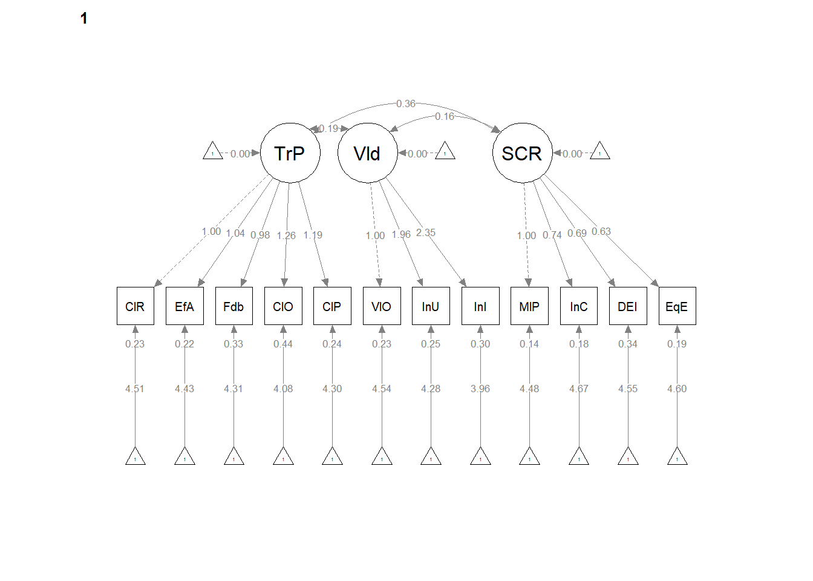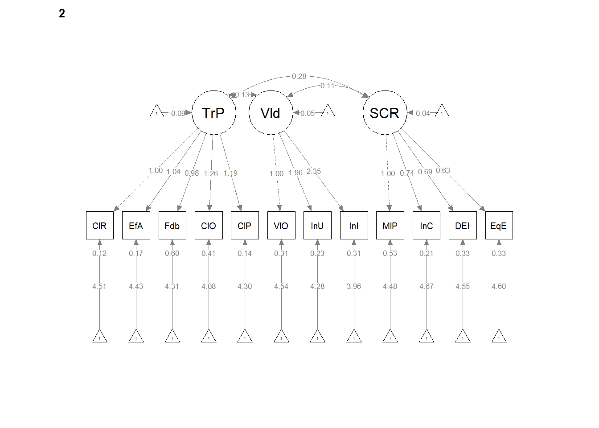
Specify, evaluate, and interpret the CFA for strict invariance. Conduct the analysis to compare fit the strict and strong models. Write up the preliminary results.
To the weak invariance code we add “residuals” to a concatonated list in the group.equal command.
strict <- lavaan::cfa(corrF, data = items, group = "Dept", group.equal = c("loadings",
"intercepts", "residuals"))
lavaan::summary(strict, fit.measures = TRUE, standardized = TRUE, )lavaan 0.6.17 ended normally after 82 iterations
Estimator ML
Optimization method NLMINB
Number of model parameters 81
Number of equality constraints 33
Number of observations per group: Used Total
CPY 202 232
ORG 65 78
Model Test User Model:
Test statistic 459.401
Degrees of freedom 132
P-value (Chi-square) 0.000
Test statistic for each group:
CPY 240.235
ORG 219.166
Model Test Baseline Model:
Test statistic 2156.987
Degrees of freedom 132
P-value 0.000
User Model versus Baseline Model:
Comparative Fit Index (CFI) 0.838
Tucker-Lewis Index (TLI) 0.838
Loglikelihood and Information Criteria:
Loglikelihood user model (H0) -2957.953
Loglikelihood unrestricted model (H1) -2728.252
Akaike (AIC) 6011.906
Bayesian (BIC) 6184.094
Sample-size adjusted Bayesian (SABIC) 6031.906
Root Mean Square Error of Approximation:
RMSEA 0.136
90 Percent confidence interval - lower 0.123
90 Percent confidence interval - upper 0.150
P-value H_0: RMSEA <= 0.050 0.000
P-value H_0: RMSEA >= 0.080 1.000
Standardized Root Mean Square Residual:
SRMR 0.116
Parameter Estimates:
Standard errors Standard
Information Expected
Information saturated (h1) model Structured
Group 1 [CPY]:
Latent Variables:
Estimate Std.Err z-value P(>|z|) Std.lv Std.all
TradPed =~
ClrRspn 1.000 0.610 0.800
EffctvA (.p2.) 1.040 0.066 15.724 0.000 0.634 0.810
Feedbck (.p3.) 1.010 0.077 13.173 0.000 0.616 0.706
ClrOrgn (.p4.) 1.300 0.088 14.795 0.000 0.792 0.773
ClrPrsn (.p5.) 1.231 0.073 16.748 0.000 0.750 0.848
Valued =~
VlObjct 1.000 0.347 0.571
IncrUnd (.p7.) 2.004 0.226 8.856 0.000 0.696 0.819
IncrInt (.p8.) 2.390 0.268 8.926 0.000 0.830 0.834
SCRPed =~
MltPrsp 1.000 0.707 0.843
InclsvC (.10.) 0.622 0.053 11.698 0.000 0.440 0.678
DEIntgr (.11.) 0.591 0.063 9.426 0.000 0.418 0.566
EqtblEv (.12.) 0.644 0.052 12.496 0.000 0.455 0.716
Covariances:
Estimate Std.Err z-value P(>|z|) Std.lv Std.all
TradPed ~~
Valued 0.185 0.029 6.388 0.000 0.873 0.873
SCRPed 0.374 0.048 7.805 0.000 0.869 0.869
Valued ~~
SCRPed 0.166 0.029 5.688 0.000 0.675 0.675
Intercepts:
Estimate Std.Err z-value P(>|z|) Std.lv Std.all
.ClrRspn (.31.) 4.514 0.052 87.278 0.000 4.514 5.924
.EffctvA (.32.) 4.429 0.053 83.153 0.000 4.429 5.656
.Feedbck (.33.) 4.297 0.058 74.126 0.000 4.297 4.927
.ClrOrgn (.34.) 4.087 0.069 59.115 0.000 4.087 3.988
.ClrPrsn (.35.) 4.298 0.061 70.788 0.000 4.298 4.860
.VlObjct (.36.) 4.535 0.040 114.691 0.000 4.535 7.453
.IncrUnd (.37.) 4.277 0.058 73.215 0.000 4.277 5.032
.IncrInt (.38.) 3.961 0.069 57.702 0.000 3.961 3.981
.MltPrsp (.39.) 4.470 0.058 77.085 0.000 4.470 5.329
.InclsvC (.40.) 4.685 0.043 108.763 0.000 4.685 7.229
.DEIntgr (.41.) 4.557 0.048 95.088 0.000 4.557 6.173
.EqtblEv (.42.) 4.600 0.043 107.915 0.000 4.600 7.233
Variances:
Estimate Std.Err z-value P(>|z|) Std.lv Std.all
.ClrRspn (.16.) 0.209 0.021 9.784 0.000 0.209 0.360
.EffctvA (.17.) 0.211 0.022 9.657 0.000 0.211 0.344
.Feedbck (.18.) 0.381 0.036 10.573 0.000 0.381 0.501
.ClrOrgn (.19.) 0.422 0.042 10.079 0.000 0.422 0.402
.ClrPrsn (.20.) 0.219 0.024 8.978 0.000 0.219 0.280
.VlObjct (.21.) 0.250 0.023 10.729 0.000 0.250 0.674
.IncrUnd (.22.) 0.238 0.030 7.866 0.000 0.238 0.329
.IncrInt (.23.) 0.301 0.041 7.406 0.000 0.301 0.304
.MltPrsp (.24.) 0.204 0.028 7.179 0.000 0.204 0.290
.InclsvC (.25.) 0.227 0.023 10.077 0.000 0.227 0.540
.DEIntgr (.26.) 0.370 0.034 10.748 0.000 0.370 0.679
.EqtblEv (.27.) 0.197 0.020 9.721 0.000 0.197 0.488
TradPed 0.372 0.051 7.259 0.000 1.000 1.000
Valued 0.121 0.027 4.447 0.000 1.000 1.000
SCRPed 0.499 0.069 7.249 0.000 1.000 1.000
Group 2 [ORG]:
Latent Variables:
Estimate Std.Err z-value P(>|z|) Std.lv Std.all
TradPed =~
ClrRspn 1.000 0.738 0.850
EffctvA (.p2.) 1.040 0.066 15.724 0.000 0.767 0.858
Feedbck (.p3.) 1.010 0.077 13.173 0.000 0.745 0.770
ClrOrgn (.p4.) 1.300 0.088 14.795 0.000 0.959 0.828
ClrPrsn (.p5.) 1.231 0.073 16.748 0.000 0.908 0.889
Valued =~
VlObjct 1.000 0.278 0.487
IncrUnd (.p7.) 2.004 0.226 8.856 0.000 0.558 0.753
IncrInt (.p8.) 2.390 0.268 8.926 0.000 0.665 0.772
SCRPed =~
MltPrsp 1.000 0.724 0.849
InclsvC (.10.) 0.622 0.053 11.698 0.000 0.451 0.687
DEIntgr (.11.) 0.591 0.063 9.426 0.000 0.428 0.576
EqtblEv (.12.) 0.644 0.052 12.496 0.000 0.466 0.724
Covariances:
Estimate Std.Err z-value P(>|z|) Std.lv Std.all
TradPed ~~
Valued 0.127 0.037 3.450 0.001 0.616 0.616
SCRPed 0.414 0.094 4.425 0.000 0.775 0.775
Valued ~~
SCRPed 0.153 0.040 3.843 0.000 0.760 0.760
Intercepts:
Estimate Std.Err z-value P(>|z|) Std.lv Std.all
.ClrRspn (.31.) 4.514 0.052 87.278 0.000 4.514 5.200
.EffctvA (.32.) 4.429 0.053 83.153 0.000 4.429 4.952
.Feedbck (.33.) 4.297 0.058 74.126 0.000 4.297 4.439
.ClrOrgn (.34.) 4.087 0.069 59.115 0.000 4.087 3.527
.ClrPrsn (.35.) 4.298 0.061 70.788 0.000 4.298 4.207
.VlObjct (.36.) 4.535 0.040 114.691 0.000 4.535 7.931
.IncrUnd (.37.) 4.277 0.058 73.215 0.000 4.277 5.773
.IncrInt (.38.) 3.961 0.069 57.702 0.000 3.961 4.595
.MltPrsp (.39.) 4.470 0.058 77.085 0.000 4.470 5.236
.InclsvC (.40.) 4.685 0.043 108.763 0.000 4.685 7.146
.DEIntgr (.41.) 4.557 0.048 95.088 0.000 4.557 6.124
.EqtblEv (.42.) 4.600 0.043 107.915 0.000 4.600 7.141
TradPed -0.096 0.105 -0.912 0.362 -0.130 -0.130
Valued 0.047 0.048 0.978 0.328 0.169 0.169
SCRPed -0.099 0.113 -0.878 0.380 -0.136 -0.136
Variances:
Estimate Std.Err z-value P(>|z|) Std.lv Std.all
.ClrRspn (.16.) 0.209 0.021 9.784 0.000 0.209 0.277
.EffctvA (.17.) 0.211 0.022 9.657 0.000 0.211 0.264
.Feedbck (.18.) 0.381 0.036 10.573 0.000 0.381 0.407
.ClrOrgn (.19.) 0.422 0.042 10.079 0.000 0.422 0.315
.ClrPrsn (.20.) 0.219 0.024 8.978 0.000 0.219 0.210
.VlObjct (.21.) 0.250 0.023 10.729 0.000 0.250 0.763
.IncrUnd (.22.) 0.238 0.030 7.866 0.000 0.238 0.433
.IncrInt (.23.) 0.301 0.041 7.406 0.000 0.301 0.405
.MltPrsp (.24.) 0.204 0.028 7.179 0.000 0.204 0.280
.InclsvC (.25.) 0.227 0.023 10.077 0.000 0.227 0.528
.DEIntgr (.26.) 0.370 0.034 10.748 0.000 0.370 0.669
.EqtblEv (.27.) 0.197 0.020 9.721 0.000 0.197 0.475
TradPed 0.544 0.112 4.855 0.000 1.000 1.000
Valued 0.077 0.023 3.333 0.001 1.000 1.000
SCRPed 0.525 0.116 4.533 0.000 1.000 1.000Let’s export the data into .csv files that we can manipulate outside of the R environment.
strict_FitStats <- tidySEM::table_fit(strict)
strict_paramEsts <- tidySEM::table_results(strict, digits = 3, columns = NULL)
strict_Corrs <- tidySEM::table_cors(strict, digits = 3)
# to see each of the tables, remove the hashtag strict_FitStats
# strict_paramEsts strict_Corrswrite.csv(strict_FitStats, file = "strict_FitStats.csv")
write.csv(strict_paramEsts, file = "strict_paramEsts.csv")
write.csv(strict_Corrs, file = "strict_Corrs.csv")with the lavaan::anova function we can formally compare the configural, weak, strong, and strict tests.
Chi-Squared Difference Test
Df AIC BIC Chisq Chisq diff RMSEA Df diff Pr(>Chisq)
configural 102 5951.9 6231.7 339.43
weak 111 5994.8 6242.3 400.29 60.862 0.207759 9 0.0000000009145
strong 120 5989.7 6205.0 413.23 12.936 0.057238 9 0.1655
strict 132 6011.9 6184.1 459.40 46.175 0.146057 12 0.0000064729187
configural
weak ***
strong
strict ***
---
Signif. codes: 0 '***' 0.001 '**' 0.01 '*' 0.05 '.' 0.1 ' ' 1The Chi-square difference test indicates fatalistically significant differences between the strict and strong models: \(\chi_{D}^2(12) = 46.175, p < 0.001\).
Below we hand calculate the change CFI test. This difference between the CFI tests from the strong and strict models is 0.017 and slightly exceeds the \(\Delta CFI < 0.01\). criteria.
[1] 0.017Strict invariance model. In the strict invariance model, configuration, factor loadings, indicator means/intercepts, and residuals were constrained to be the same for each group. Fit indices were less than ideal: \(\chi^2(132) = 459.401, p < .001, CFI = 0.838, SRMS = 0.116, RMSEA = 0.1360(90%CI = 0.123, 0.150)\). Factorial noninvariance was already suggested in the restriction from weak to strong, this continues to be true: \(\chi_{D}^2(12) = 46.175, p < 0.001; \Delta CFI = 0.017\). For CPY, standardized pattern coefficients ranged between 0.71 and 0.85 on the TradPed factor, between 0.57 and 0.83 on the Valued factor, and between 0.68 and 0.84 on the SCRPed factor. For ORG, standardized pattern coefficients ranged between 0.77 and 0.89 for the TradPed factor, between 0.49 and 0.77 on the Valued factor, and between 0.58 and 0.85 on the SCRPed factor.
Create an APA style results section. Do not report any invariance tests past the one that failed. Include a table(s) and figure(s).
To test if the factor structures of the course evaluations were stable across department (CPY and ORG), we used measurement invariance analyses. First, we constructed CFA models with the lavaan (v. 0.6-17) package in R and created two groups representing CPY and ORG. Within lavaan we successivly constrained parameters representing the configural, weak (loadings), strong (intercepts), and strict (residuals) structures (Hirschfeld & von Brachel, 2014; Kline, 2016). A poor fit in any of these models suggests that the aspect being constrained does not operate consistently for the different groups. The degree of invariance was determined jointly when \(\chi^2 p > .05\) and a \(\Delta CFI < .01\).
The configural model constrains only the relative configuration of variables in the model to be the same in both groups. In other words, no factor loadings or indicator means are constrained to be the same across groups, but the organization of indicators is the same for both groups. Next, in weak factorial invariance, the configuration of variables and all factor loadings are constrained to be the same for each group. Poor fit here suggests that the factor loadings vary in size between the two groups. In strong factorial invariance, both the configuration, factor loadings, and the indicator means are constrained to be the same for each group. A reduction in fit here, but not in the previous steps, suggests that indicators have different means in both groups, which might be expected when comparing two groups of people, such as in a t-test. Therefore, poor fit in only this model does not necessarily indicate the factor structure operates differently for different groups. Finally, strict factorial invariance requires strong invariance and equality in error variances and covariances across groups. This means that the indicators measure the same factors in each group with the same degree of precision.
We selected fit criteria for their capacity to assess different aspects of the statistical analysis. As is common among SEM researchers, we reported the chi-square goodness of fit (\(\chi^2\)). This evaluates the discrepancy between the unrestricted sample matrix and the restricted covariance matrix. Although the associated p value indicates adequate fit when the value is non-significant, it is widely recognized that large sample size can result in a statistically significant p value (Byrne, 2016). The comparative fit index (CFI) is an incremental index, comparing the hypothesized model with the baseline model, and should be at least .90 and perhaps higher than .95 (Hu & Bentler, 1999). The root mean square error of approximation (RMSEA) takes into account the error of approximation in the population and expresses it per degree of freedom. As such, the fit indicator considers the complexity of the model. Ideal values are equal to or less than .05, values less than .08 represent reasonable fit, and values between .08 and .10 represent mediocre fit. The standardized root mean residual (SRMR) is a standardized measure of the mean absolute covariance residual – the overall difference between the observed and predicted correlations. Values greater than .10 may indicate poor fit and inspection of residuals is then advised. Researchers have advised caution when using these criteria as strict cutoffs, and other factors such as sample size and model complexity should be considered (Kline, 2016).
Course evaluation items each were loaded on their respective correlated factors. The configural model, which constrained only the relative configuration of variables in the model to be the same in both groups had less than adequate fit to the data: \(\chi^2 (102)=339.43, p < 0.001, CFI = 0.883, SRMR = 0.073, RMSEA = 0.132, 90%CI(0.117, 0.148)\). Even though some of the fit criteria were less than adequate, we cautiously proceeded to the next stage of invariance testing. The weak invariance model constrained the configuration of variables and all factor loadings to be constant across groups. Unfortunately, all indicators suggested poor fit: \(\chi^2(111)=400.29, p < 0.001, CFI = 0.857, SRMR = 0.101, RMSEA = 0.140 (90%CI = 0.125, 0.156)\). Further, noninvariance of the factor loadings was supported by the significant difference tests that assessed model similarity: \(\chi_{D}^2(9)=60.86,p < .001; \Delta CFI = .026\). Because we found noninvariance at the weak level, we did not attempt to model strong nor strict invariance.